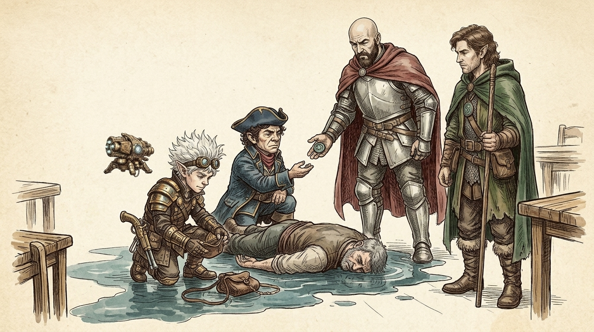
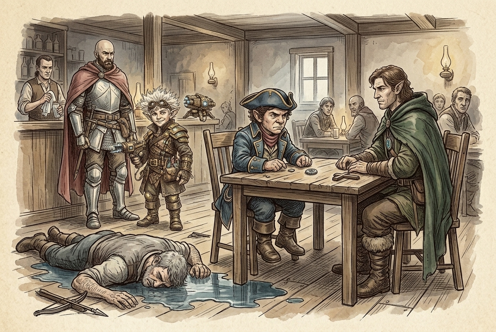
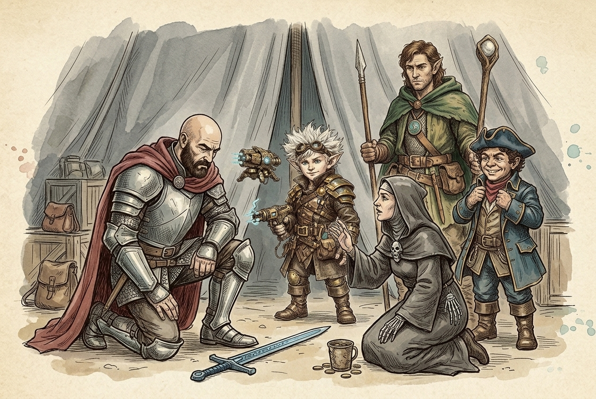
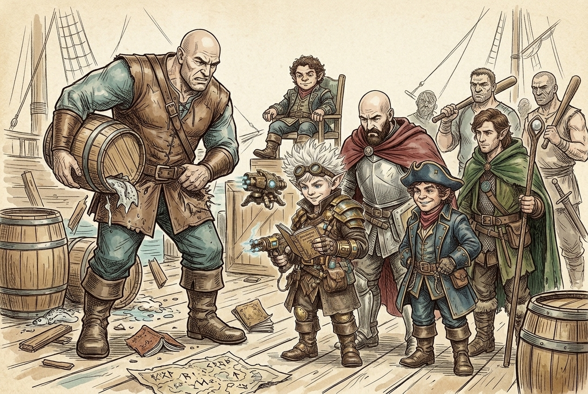
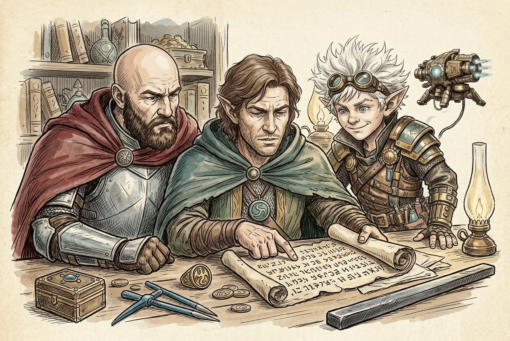
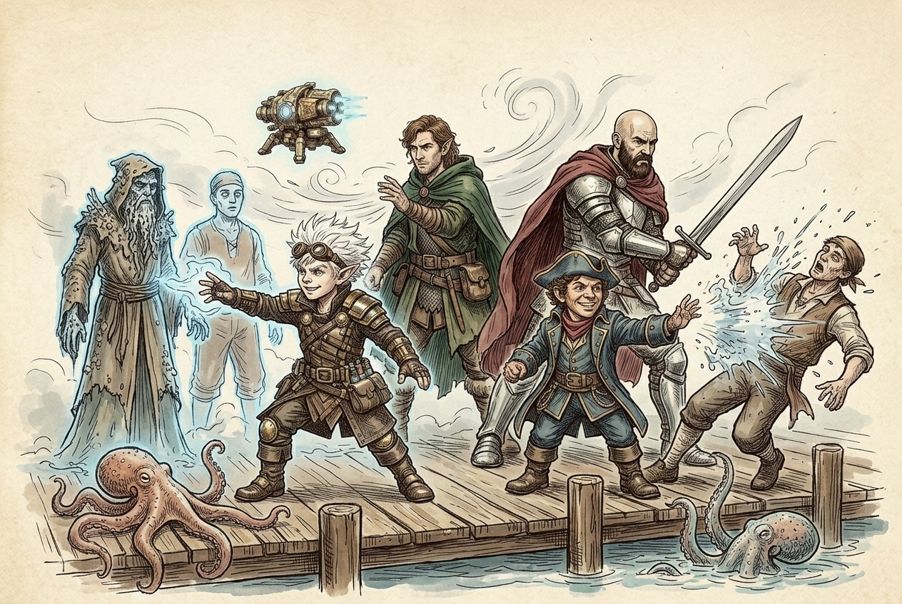

Session 2026-08-12

In brief: A dead dockhand, a coin that only touches the drowned, and a goliath whose debt was never meant to be paid.
Aftermath in the Deep Water Inn

The bodies were not yet cold. A crossbow bolt had finished the man at the heart of the mind-control, and the moment he died every white eye in the room cleared. He was no mastermind — a gray, stubbled dockhand named Emmert Dorrow. Beneath him a pool of seawater had spread and settled, come from no wound and no mouth.
A guard laid a hand on Hal's shoulder, and the cursed sword did its work: the man was an elf, and Hal could manage only rudeness. When the guard went for his captain, Fiz turned it — establishing before the whole room that this guard's own eyes had gone white, then asking who would corroborate it. Three patrons stood, and the guards found urgent business elsewhere.
Emmert's purse went to the barkeep for his widow, Thora. But folded in leather in a separate pocket was a coin: an eye on one face, the other buried under calcification that would not clean. The barkeep touched it and went blank. The coin took hold of anyone who had gone white-eyed and did nothing to anyone else — nothing to Fiz.
Working the room, Toz learned what he chose not to share: every one of the possessed had lately dreamt of being called to the ocean by a piper from the sea. The same dream Toz has been having. When the coin reached him he made his face a wall — but Eno's stillness caught the twitch. Eno alone knows Toz is hiding something, and said nothing.
Grey tents at the Plinth

A patron's tip sent them to the Plinth in the Sea Ward, where tents house the gods with no stone temple in Waterdeep. In the grey tent at the back a priestess of Kelemvor knelt without looking up: "someone approaches." A coin in her cup, Hal on his knees, and a verdict — no ordinary curse but grave goods. You stole this from a tomb. Two remedies: return the blade where it was found, or find someone of its owner's lineage and win their permission. The sword came from a sarcophagus beneath Nightstone and belonged to the Nandar family, whose last known scion the giants crushed. The curse stands.
The eye turned up not on a banner but on a priestess's wrist. She served Umberlee, and read the coin as an old symbol of the goddess — shine and rot at war, life and death, each one numbered on its corroded face. The coin is not cursed; what happened at the inn was strange. "The work of a warlock," she judged, "somebody who has tapped into the power of Umberlee and is using it to their own means." To find such a caster, seek a diviner. She told Toz that Valkur will not always be there.
Fiz cast identify: a magic-imbued object, no attunement, no charges, one spell upon it — Eternal Corrosion — and in learning how it worked, he learned to cast it.
The ledger and the company store

On the docks stood Kuyrl Stonepalm, the goliath from the gate, hauling two barrels at once and greeting them in Giant. He was saving for a pilgrimage to the Oracle, to ask a question he would not name, and the booklet that fell from his torn pocket held his ledger — and a map to the Oracle. He would not share the way: "a place only for giants." He is giant-kin, he insisted. He can open it.
Brindle Stormtide held court on a box atop a chair, warm to a fellow halfling and immovable on all else. Of Kuyrl he laughed: "I'm gonna make a lot of money off that dude." Years, he reckoned. Asked for ship schedules he took offence, and large men drifted closer.
So they told Kuyrl the truth, the whole party stacking behind the telling. He smashed a barrel. Then Fiz opened the books: 80 gold owed, and another 80 added every year, because Brindle charges him for the very room and food he is kept in. The debt was built never to clear. With an overseer coming, the crew coached him to bellow them off, and left with his address.
Orders written in Draconic

At Chazlauth's the Goldenfields loot finally came out. The sigil ring was a Cult of the Dragon badge — a faith in all but name, worshipping Tiamat for the chromatic dragons' ends. The Draconic notes were standing orders to the half-dragon they killed: take Zephyros's navigation orb; avoid storm giants; observe the giant envoys but never interfere; spread rumour and gold among the lesser giants, for "confusion is sufficient"; "ensure the old sites remain quiet"; "if signs of the Old Wyrm of the North appear, withdraw"; "do not impede the designs of the deep speaker"; and report any cultist who speaks of alliance as though it were between equals.
The Old Wyrm, Chazlauth reckoned, is Klauth — an ancient red dragon of the north, known to deal with small folk. Even the Cult's agents are told to withdraw from him. Of the deep speaker he said nothing. He wanted the blue-steel picks purely because they looked magnificent, and traded an immovable rod for them.
Fog on the docks

They called at Kuyrl's one-room shack that night, told him the route now ran through Yackerty to Silverymoon, and won one more day of his patience. Leaving, a dense fog rose from the boards and swallowed them.
A blade came at Eno's back and missed. A spell came at Fiz and was turned aside. Fiz spun and threw faerie fire, outlining five shapes in blue — Eno among them — and Eno's wind tore the fog apart. The light showed a robed figure crusted with barnacles, two entranced dock workers, an octopus on the boards and another in the water. Toz's thunderwave caught the robed thing and a dock worker, and the worker was obliterated. Hal's cursed blade bit twice, and the figure looked astonished that it could hurt him at all. He broke for the water; Fiz's scorching ray struck with all three beams, and Hal's sword finished him. He sank, and the body was never recovered.
What's next
- Copy Kuyrl's map before starting any fight — the trade offered is a copy from Zephyros's rune book for a copy of the map.
- Extract Kuyrl, his wife and his son. Explicitly do not pay Brindle; the debt is engineered never to clear.
- A giant is needed to open the way at the Oracle, which makes Kuyrl — or Harshnag — necessary rather than merely useful.
- Find a diviner to trace the warlock who bent Umberlee's power at the inn.
- The deep speaker — the Cult's orders defer to it, the drowned all dream of it, and Toz dreams of it and has told nobody.
- Klauth, the Old Wyrm of the North, is a lever nobody has pulled; the Nandar heir could lift Hal's curse without the ride to Nightstone.
- A dead innocent lies on the docks, killed by the crew's own thunder, in a city whose watch already tried to detain them once.
Original session notes (Fiz's POV)
In the pub, right after the fight with the white eyed possessed people. We check out the dead guy that was the source of the magic that affected the other people in the pub. He was an ordinary dock worker named Emmert Dorrow. We give his purse the bartender to return to his family. We find a coin in a leather pouch on him. The coin has an eye on one side. The other side is very corroded making it impossible to discern any markings or writing. A pool of sea water has spread around his body as though it washed out of him when he died.
One of the guards who was possessed trys to detain us for questioning. Fiz points out to the guard that he also tried to attack us. Guard says he doesn't remember that and asks for proof. Fiz asks other pub patrons to corroborate the story. Several step forward and do. The guard drops the matter and says they have to leave.
Toz asks the other people who were possessed about what happened. They all remember having a dream calling them to the ocean, just like Toz did. Toz chooses to keep this to himself, so the rest of the party does not know about this. Eno senses that Toz is hiding something about the coin, but nobody else does.
Fiz asks the bartender about the coin. When the bartender touches it, he starts to zone out like the coin is affecting him. Several others who went white eyed are also affected by the coin. Fiz is not affected by touching it however. Only seems to affect people who went white eyed. Ask the bartender who might help us identify the coin. He says to ask Brindle.
While discussing Hal's cursed sword, a man tells Hal to take the sword to Plinth in the Sea Ward near the market. There are many tents there set up as temples. He says to look for a gray tent in the back.
We go out to the docks to look for Brindle. We run into the goliath from the entry gate to Waterdeep. His name is Kuyrl Stonepalm. He's happy to see us. Points us to Brindle who is barking orders at dock workers. We approach Brindle to ask about coin. He says he's very busy and to come back in an hour. On our way out we see a small booklet drop out of Kuyrl's back pocket. He picks it up and says it's a ledger of his earnings. Says it also contains a map to the Oracle in the Spine of the World. Says he wants to find the Oracle once he's paid off his debt to Brindle. He owes Brindle 80 gold. He's willing to come with us to find the Oracle after his debt is paid. Doesn't want to leave before debt is paid because his wife and child then might be in danger.
We go to Plinth to find the gray tent. There are rows of tents for various religions. We find the gray tent and enter. Talk to woman inside. She holds out a cup to ask for an offering before she helps us. Hal gives her a gold coin. Woman says the sword has a "grave goods" curse and that it can be lifted by returning the sword to where we found it in Nightstone or by getting permission to wield it from a blood relative of the Nandar family.
We look for a tent with a banner that is similar to the eye on the coin we found on Emmert. We find one. A woman inside is wearing a bracelet with a very similar coin, eye on one side, corroded on the other. We ask about the bracelet. She says it's a symbol of the goddess Umberlee (aka The Bitch Queen, The Queen of the Deeps). We relate the story from the tavern with the people whose eyes went white. She thinks it could be the work of a warlock. I use the spell Identify on the coin. The coin is affected by the spell Eternal Corrosion. Cleaning the corrosion will have no effect. It will corrode again. I learn this spell as a cantrip. I can use the spell on objects that will fit in the palm of my hand.
We return to the tavern. Brindle is at a table carousing with others. We try to ask him about the coin and about finding a ship to take us north. He gets annoyed with us for asking him about ship time tables and other trivial stuff. We ask about Kuyrl's debt. He says he plans to make a lot of money off of Kuyrl's work since he's so strong. Laughs when we mention Kuyrl paying it off. Says Kuyrl is going to be here a long time.
We go out to the docks to find Kuyrl and try to explain that Brindle doesn't seem to have any intention of letting him pay off his debt. He's skeptical. Fiz offers to go over his ledger. Fiz figures out that Kuyrl is actually going into more debt because he's paying Brindle for lodging, food, etc. Kuyrl will never be able to pay off his debt. Kuyrl gets very angry and smashes one of the barrels he's carrying. Other dock workers start to notice us. We tell Kuyrl we will take him with us, but he needs to finish working so as not to arouse suspicion. Tell him he needs to loudly tell us to leave so others don't suspect him and that we will come back at night. He yells at us and we leave.
We go visit Chaz to ask about dragon items we got from fight with blue dragon. The Blue dragon sigil ring is a symbol of the cult of the dragon that worships Tiamat. The draconic notes are instructions to the half dragon we fought. The notes instruct him to:
- get Zephyros's navigation orb
- avoid storm giants unless discovery is unavoidable
- observe giant envoys on the coast — record, don't interfere
- spread rumour and gold among the lesser giants, "confusion is sufficient"
- "Ensure the old sites remain quiet"
- "If signs of the Old Wyrm of the North appear, withdraw"
- "Do not impede the designs of the deep speaker"
- report any cultist who speaks of alliances as if they were equals
Chaz thinks the Wyrm of the North is an ancient red dragon named Klauth who lives in the north and sometimes has dealings with small folk. Chaz wants the Blue-steel thieves' tools because they look super cool. He gives us an immovable rod in exchange.
As night falls, we head to Kuyrl's residence which is a small one room shack among many others under the docks. We tell him that we need to find a man named Yackerty who can maybe get us all to Silverymoon which will help us get to the Oracle. He agrees to work for another day. We tell him we'll come back the following night.
As we are leaving the docks, a dense fog rises from the ground and envelopes us. A figure tries to stab Eno with a sword from behind but misses. Another figure tries to cast shatter on Fiz, but Fiz uses the shield spell to block it. Fiz whips around and casts Faerie Fire to illuminate our attackers. Flakes of metal bast out from his spell casting rod and blanket the two shadowy figures plus another figure next to Hal, a figure in front of Eno, and Eno. All are illuminated with blue faerie fire. This negates the disadvantage on attacks due to the fog. Eno casts wind wall and shapes it to hit all of our attackers. The wind also dissipates the fog. We now discern that the figure behind Fiz is wearing a gray robe and is encrusted with barnacles. The figures behind Eno and next to Hal appear to be entranced dock workers. The figure in front of Eno is an octopus and there is another octopus in the water just off the dock. Toz casts thunderwave and the gray robed figure by Fiz and the dock worker by Hal. The dock worker is obliterated. Hal attacks the robed figure with his sword, hitting him twice. The robed figure appears shocked that Hal's sword was able to hurt him. The octopusses try to attack Eno and Fiz but miss. The robed figure flees and jump in the water off the dock. Fiz hits the robed figure with all three beams of a scorching ray spell. Hal hit him again with his sword, killing him. He sinks below the water. The other dock worker snaps out of his trance. The octopusses no longer seem interested in attacking. Toz pushes the octopusses away with a wave.
Raw transcript (302 chunks of auto-transcribed audio)
Lightly chunked. Expect overlap with table chatter.
[00:00:04.139] [SPEAKER_05] we're recording you [00:00:05.259] [SPEAKER_02] we are so yeah we're still in the tavern [00:00:12.519] [SPEAKER_05] uh it wasn't clear to me i know we the last shot was a crossbow bolt to the the leader of what of the group [00:00:22.859] [SPEAKER_04] the guy that you saw the um the like magic coming from yeah [00:00:30.480] [SPEAKER_05] but i don't know if we did we actually 100 % they're dead or did we have an opportunity to try to [00:00:41.380] [SPEAKER_02] keep them from being killed [00:00:45.119] [SPEAKER_05] and they've been oh i think i think it was i thought it was clear that you killed them because uh you wanted to not have but used a lethal attack right because it was a ranged attack yeah okay i think we talked that was the last session we talked about like non -equal damage [00:01:06.680] [SPEAKER_02] yeah [00:01:07.200] [SPEAKER_05] did we loot the um leader guy and [00:01:10.799] [SPEAKER_06] get anything off of them [00:01:12.599] [SPEAKER_05] i don't think we did anything i think it was just [00:01:14.540] [SPEAKER_06] the battle ended and then it was kind of we didn't do anything yeah um so did the townspeople snap out of it is that [00:01:23.959] [SPEAKER_05] what happened yeah they said the all their eyes cleared up as soon as that person died okay [00:01:29.159] [SPEAKER_06] i guess um i inspect the [00:01:33.540] [SPEAKER_05] do we kill him or did we knock him out the leader [00:01:37.060] [SPEAKER_06] guy i think they already did because we used [00:01:38.640] [SPEAKER_05] a crossbow to kill them i think he was so [00:01:50.079] [SPEAKER_06] this guy was [00:02:07.219] [SPEAKER_05] so this guy has a clothes of just an ordinary dockhand uh he's a human man uh a bit gray got a little stubble but he's you know worn uh worn dockhand style clothes [00:02:27.819] [SPEAKER_06] um typical of water deep clothing would you say yeah he looks like just like an ordinary kind of guy who lives and works down here in the uh in the docks [00:02:39.139] [SPEAKER_05] he doesn't look like a criminal mastermind so if we search his pockets and whatnot and find anything of [00:02:48.060] [SPEAKER_02] note do you do that yeah [00:02:49.379] [SPEAKER_05] okay um the barkeep says hey [00:02:52.979] [SPEAKER_02] or i say what is [00:02:53.919] [SPEAKER_00] anybody know this guy first [00:02:55.300] [SPEAKER_05] i guess that would be the logical thing to start off as you search his pockets does anybody know him [00:03:01.340] [SPEAKER_07] hey that's uh emmett doro yeah dockhand anyone explain what just happened [00:03:09.599] [SPEAKER_05] that was crazy two of the guards that were there are also uh like waking up and shaking their heads can [00:03:19.819] [SPEAKER_07] anyone explain what just happened here how did that man die [00:03:29.259] [SPEAKER_06] well they were all pathetic [00:03:30.699] [SPEAKER_05] they were all attacking us [00:03:34.460] [SPEAKER_02] didn't you don't you see [00:03:36.680] [SPEAKER_05] the mess yeah everything was kind of a blur from the last few minutes i'll say i think you guys were under some sort of spell [00:03:48.379] [SPEAKER_03] wow [00:03:48.900] [SPEAKER_02] this guy seemed to be the source of it [00:03:53.680] [SPEAKER_03] oh i don't know anything [00:03:59.340] [SPEAKER_05] you don't remember anything from the last [00:04:01.240] [SPEAKER_07] few minutes [00:04:03.680] [SPEAKER_05] i could just hear the [00:04:05.039] [SPEAKER_07] sound [00:04:05.840] [SPEAKER_03] of ocean [00:04:06.439] [SPEAKER_05] waves [00:04:09.280] [SPEAKER_03] deep rumbling sound [00:04:10.900] [SPEAKER_06] everything went dark real dark anyone strange come in recently in the past day or two [00:04:20.660] [SPEAKER_05] anyone strange come in uh i mean there's lots of folks coming in and out of these these docks we got new ships coming in every day [00:04:30.500] [SPEAKER_02] you said something to utah [00:04:32.160] [SPEAKER_05] there's a uh a pool of water spreading from underneath the uh the man who's dead he's [00:04:39.839] [SPEAKER_02] wet himself not unusual from what i hear he has a dockhand [00:04:47.000] [SPEAKER_05] after all uh does he look like he's uh bleeding no i mean yeah there's like blood coming out of his wound but there's distinctly like a large pool of water that just sort of like released out of him [00:05:02.560] [SPEAKER_06] no one touched the water does it look like it came out of somewhere or [00:05:07.879] [SPEAKER_05] like [00:05:08.279] [SPEAKER_02] his like his mouth or his [00:05:09.740] [SPEAKER_05] uh no no it doesn't so probably you know doesn't [00:05:17.860] [SPEAKER_06] look [00:05:18.019] [SPEAKER_05] like it's flowing [00:05:18.779] [SPEAKER_06] like on its with a mind of its own or is it kind of just natural [00:05:22.199] [SPEAKER_05] no it just sort of washed out and then settled okay give [00:05:30.220] [SPEAKER_06] it a sniff he's the [00:05:34.839] [SPEAKER_05] only one dead is that right or in the battle [00:05:37.939] [SPEAKER_06] the only one who's on the [00:05:39.300] [SPEAKER_05] floor [00:05:39.540] [SPEAKER_06] yeah he's the only one who died everyone else has uh [00:05:43.800] [SPEAKER_05] you know stood up and they're shaking and they're kind of all just watching the conversation uh the uh the waitress that you healed you know she's like clutching your your shirt and uh [00:05:59.860] [SPEAKER_07] i i don't know what happened there i watched myself pick up the knife and then everything just went white [00:06:08.939] [SPEAKER_05] they said something to you joss boy [00:06:14.160] [SPEAKER_06] in the do you know what that was about in the scuffle i have forgotten i [00:06:23.120] [SPEAKER_01] forgot to review the [00:06:25.620] [SPEAKER_06] i could i could pull that up i guess [00:06:29.100] [SPEAKER_07] it's okay i'm sure it wasn't important um [00:06:38.680] [SPEAKER_05] what time of day is it right now it's like um just after morning okay um i step out of the tavern and kind of just look around the area uh you see you know people are coming and going business as usual there's a man with a barrow full of fish there's a uh child sort of like dandy child with a a big red balloon [00:07:09.800] [SPEAKER_06] walking [00:07:10.439] [SPEAKER_04] uh [00:07:10.819] [SPEAKER_06] holding its parents hands looks like some sort of wealthy sailor and the ocean we can take the ocean from the tavern right yeah it's like a few steps away from the docks nothing the ocean looks calm nothing amiss [00:07:28.560] [SPEAKER_05] yeah it's like a nice spring or fall morning all right he said fall [00:07:39.220] [SPEAKER_01] you should have taken their offer or something like that [00:07:43.120] [SPEAKER_05] who's offered [00:07:44.160] [SPEAKER_06] yeah that's right that's what that's right yeah yeah [00:07:46.740] [SPEAKER_05] the woman said that before they attacked us yeah um put her arm on your hand on your shoulder or something um the woman clutching your arm she's like pleading with you please tell me that's not gonna happen again please tell me that [00:08:12.920] [SPEAKER_01] oh yeah the vile feeling isn't still in me no [00:08:15.680] [SPEAKER_05] it's definitely gone oh [00:08:17.500] [SPEAKER_01] died with [00:08:18.180] [SPEAKER_05] that guy [00:08:21.939] [SPEAKER_01] i'm trying to think like uh how can you [00:08:24.699] [SPEAKER_05] be [00:08:24.819] [SPEAKER_01] so sure because i'm gonna do a perception check [00:08:30.800] [SPEAKER_05] he says [00:08:31.560] [SPEAKER_06] in character i mean i don't have like can i run or insight check i guess maybe i don't know what are you trying to do and i think we'll [00:08:46.200] [SPEAKER_01] figure out if whatever was here is gone [00:08:51.000] [SPEAKER_05] yeah i guess if we run another detective magic like i did before that pointed to this person as the leader um yeah so you do that you take 10 minutes for your [00:09:04.639] [SPEAKER_02] ritual ritual yeah um or while everyone's hanging out here making your ritual happen again um no trace of magic [00:09:18.039] [SPEAKER_05] well it seems like whatever took you guys over was is gone now i don't know um why don't you make a make a religion check [00:09:27.940] [SPEAKER_01] that's probably avoiding because i do not have very good religion but [00:09:30.919] [SPEAKER_05] uh do you have a skill that you think would um help you here [00:09:36.940] [SPEAKER_01] i'm just gonna do it that is a 2 minus [00:09:43.840] [SPEAKER_05] 1 okay so the thing you didn't do didn't work um i'm gonna look i'm gonna look [00:09:52.580] [SPEAKER_04] that [00:09:53.399] [SPEAKER_01] low i almost feel like there should be a confident misdirect [00:10:03.059] [SPEAKER_05] i have a plus 4 religion can i make a religion check um i'm gonna look through the book i have i don't know sorry i guess it's all directed okay the uh book that was given to me by the priest [00:10:19.860] [SPEAKER_06] the [00:10:20.379] [SPEAKER_05] book of verun [00:10:21.700] [SPEAKER_06] that's my i'm gonna look for like stories related [00:10:24.820] [SPEAKER_05] to something like this happening people getting possessed okay um make a make an intelligence check there's gonna be a d20 edge or intelligence if you have a skill or i guess religion um if you have religion proficiency [00:10:38.100] [SPEAKER_06] i do [00:10:38.720] [SPEAKER_05] not then this is like just studying the book [00:10:42.019] [SPEAKER_06] 14 or religion 14 so um [00:10:47.639] [SPEAKER_05] you do find a section of like um sea beasts and um demigods um you know kind of like the things to be warned about from your god the thing that your god like that he battles with in the other realms um gods like umberley the sea bitch um and there's a there's several different monsters that you know you would need to read more about to figure out um with that role so you could spend more time studying the book and reading about it and maybe learn more so you feel like you're on the track but you haven't like discovered really anything other than you know maybe there's something to do with with sea gods [00:11:39.320] [SPEAKER_00] can that be done during a long rest [00:11:41.860] [SPEAKER_06] yeah um consider [00:11:44.399] [SPEAKER_05] what's the morning right now and i guess like while we're thinking about what to do i sit at the docks and i look at the book for up to an hour i guess until unless something else happens i guess like i'm [00:11:58.779] [SPEAKER_06] just gonna be looking at it while they're doing their their thing okay [00:12:02.960] [SPEAKER_05] um let me get back to you on what happens next depending on what everyone else does okay um yeah what's everyone else doing in this cavern right now well when i when i asked ta's about what they said to you [00:12:18.840] [SPEAKER_02] did you have [00:12:19.539] [SPEAKER_05] oh any recollection of that or yes they said they should have i should have [00:12:23.740] [SPEAKER_06] taken their offer um i'm not quite sure what that means what [00:12:29.360] [SPEAKER_03] was [00:12:29.480] [SPEAKER_06] the [00:12:29.600] [SPEAKER_03] offer you got to call [00:12:31.460] [SPEAKER_06] hmm i can't really say at this moment i'm not sure what they were talking about [00:12:37.240] [SPEAKER_05] hmm sorry who are you talking to you you [00:12:40.019] [SPEAKER_06] said us oh no this is happening before i went out with a [00:12:43.919] [SPEAKER_05] book i suppose sorry that's okay you can lift your head to chat [00:12:48.320] [SPEAKER_06] yeah [00:12:52.659] [SPEAKER_05] um so [00:12:53.740] [SPEAKER_06] one of the guards comes up to you and he puts his hand on your shoulder and he says excuse me sir you have kind and honest face can you tell me what what just went down in your own words and looking at him you feel like a shiver run up your spine and just like an anger start to well within you as you notice his long pointed ears his uh symmetrical facial features right [00:13:25.820] [SPEAKER_05] chiseled yeah gorgeous time well i can't really roll to resist rage right roll for an instant so well the problem is is no longer exists i don't want to talk to you i don't know i [00:13:46.159] [SPEAKER_02] can't really [00:13:46.580] [SPEAKER_00] explain [00:13:47.000] [SPEAKER_02] why it's not it's nothing again nothing with you well it is against you but this is my fault [00:13:54.700] [SPEAKER_05] strange words and a bit suspicious i may add candidly rolly um well keep sorry can i tell him that my i'm carrying a curse uh there's nothing in the curse that compels you from talking about the curse [00:14:12.039] [SPEAKER_00] oh okay i'm sorry i'm carrying i'm i'm i'm forced to carry this cursed sword [00:14:18.080] [SPEAKER_05] and it makes me prejudice [00:14:19.919] [SPEAKER_00] are you forced to yeah i can't get rid of it [00:14:23.039] [SPEAKER_05] is that true that's true [00:14:24.279] [SPEAKER_00] yeah you tried to [00:14:25.399] [SPEAKER_02] yeah i tried okay [00:14:26.919] [SPEAKER_05] i can't me carrying this sword right here it's like you want to be uh forces uh me to be prejudiced against uh [00:14:36.419] [SPEAKER_04] phase so [00:14:38.039] [SPEAKER_02] this sword is called fey killer so that's why i'm kind of being a little bit [00:14:43.639] [SPEAKER_05] so um roll a roll a persuasion check okay um or like given that's probably the best one you wouldn't want to like you know try and intimidate him or anything [00:14:53.679] [SPEAKER_04] you can do with disadvantage though because of your like welling anger and [00:14:57.559] [SPEAKER_02] inability to really control your mannerisms and stuff nine [00:15:05.000] [SPEAKER_04] hmm [00:15:06.840] [SPEAKER_05] bonus on that [00:15:07.659] [SPEAKER_02] oh that was it was the four plus five do you want to refresh your memory on the cursed crypt sword [00:15:15.320] [SPEAKER_05] no i mean i remember where i got it yeah it's elves fey fey is a type isn't fey that's a different thing right it's called fey killer [00:15:25.659] [SPEAKER_02] i know [00:15:26.419] [SPEAKER_05] but i thought it was are feys different than elves [00:15:29.840] [SPEAKER_02] i thought they were [00:15:30.539] [SPEAKER_05] no um elves are like a uh subgroup of fey okay that's right [00:15:37.879] [SPEAKER_02] so it's just this one group of fey [00:15:41.440] [SPEAKER_05] oh okay so yeah i have nine with my uh persuasion it feels like you're just looking excuses to be rude to people i have i have intimidation you want to intimidate him instead [00:15:55.259] [SPEAKER_02] you want to it [00:15:56.419] [SPEAKER_01] would just change the bonus [00:15:58.379] [SPEAKER_02] no it's the same it's the same okay yeah so um plus five [00:16:03.539] [SPEAKER_05] yeah yeah he says i'm gonna need you all to stay here for a little while okay don't don't don't any of you go anywhere okay who are you [00:16:13.720] [SPEAKER_02] this is the guard this is one of the guards sure sure [00:16:18.080] [SPEAKER_05] um [00:16:18.480] [SPEAKER_02] and you you want to get to the bottom of this too what are you gonna do where are you going [00:16:24.440] [SPEAKER_05] i'm getting my captain and more guards to come attack you guys [00:16:28.740] [SPEAKER_02] is this one of the guards whose eyes went white [00:16:30.779] [SPEAKER_05] yeah i will say sir that you did attack us can anyone here corroborate that story i can i can yeah oh yeah yeah [00:16:40.779] [SPEAKER_02] of course you guys are going to well there's other people in the tavern right whose eyes didn't go white right [00:16:47.379] [SPEAKER_05] no are you asking me no i'm asking the gm yes [00:16:51.840] [SPEAKER_04] oh yes you recall that there are people [00:16:53.919] [SPEAKER_02] who [00:16:54.100] [SPEAKER_07] so we can corroborate yeah there are [00:16:56.059] [SPEAKER_02] other people here [00:16:56.620] [SPEAKER_07] who saw is there anyone [00:16:57.639] [SPEAKER_05] here [00:16:58.039] [SPEAKER_07] willing [00:16:59.019] [SPEAKER_05] to speak [00:16:59.679] [SPEAKER_07] up [00:16:59.980] [SPEAKER_05] for these four [00:17:01.700] [SPEAKER_04] hello [00:17:05.200] [SPEAKER_05] nice day is there anyone willing to just tell the truth okay so you're gonna roll a persuasion check and [00:17:11.579] [SPEAKER_00] it's contested by his intimidation [00:17:15.079] [SPEAKER_02] is there anyone we're gonna have a persuasion uh i think it's alright i got intimidation okay let's do [00:17:23.059] [SPEAKER_01] this it's gonna be a 13 my persuasion is plus 3 [00:17:29.240] [SPEAKER_05] i [00:17:29.900] [SPEAKER_04] got a 21 [00:17:30.579] [SPEAKER_05] 21 uh so three people stepped forward uh one of them says i saw you trying to attack those folks [00:17:40.900] [SPEAKER_02] thank you sir [00:17:43.539] [SPEAKER_07] boccano [00:17:48.119] [SPEAKER_04] boccano [00:17:49.500] [SPEAKER_06] boccano [00:17:51.059] [SPEAKER_05] you're cursed what are the uh there you have it right well uh [00:17:57.720] [SPEAKER_00] maybe [00:17:58.579] [SPEAKER_02] we should [00:17:58.900] [SPEAKER_00] maybe we should just go and [00:18:01.240] [SPEAKER_05] let's just go we should and [00:18:02.900] [SPEAKER_00] uh he and the other guard uh [00:18:05.420] [SPEAKER_05] quickly walk out the out the tavern wait where are you going we've got guard business likely story all right too long uh i think i say i want to search this guy to see if he has any because he would seem to be the center of this does anybody object maybe the tavern owner or whoever's behind the bar [00:18:30.400] [SPEAKER_00] go ahead [00:18:31.240] [SPEAKER_05] so the tavern owner should we search him and search him get the hell out of here [00:18:35.619] [SPEAKER_06] does anyone care this guy's dead he's just kind of like [00:18:38.220] [SPEAKER_05] laying [00:18:38.519] [SPEAKER_06] there yeah someone who do we does this guy have a family does anybody somebody knows him right tell his family [00:18:45.440] [SPEAKER_05] i'll just drag him back to the kitchen dispose of him all right so he searches search him for any clues so um he's got like his normal effects you know he's got like a purse on him with a little bit of money um but in a separate pocket inside a little leather envelope or leather pouch um or just like a folded piece of leather uh there is a coin that is um corroded [00:19:25.420] [SPEAKER_06] any [00:19:25.940] [SPEAKER_05] symbols on the coin any markings uh yes there is an eye on one side of the coin like an eyeball yeah like an eyeball yeah um and then on the other the other side of the coin is indecipherable [00:19:44.940] [SPEAKER_02] like it has some writing on it but you [00:19:47.240] [SPEAKER_05] just don't know what it is and it's like so corroded that it's like it's covered in the [00:19:50.940] [SPEAKER_02] rest um [00:19:55.619] [SPEAKER_06] someone may have a spell [00:19:58.579] [SPEAKER_05] should toz carry this coin around by helping your nightmares or make them worse [00:20:03.160] [SPEAKER_06] yeah it seems uh [00:20:04.700] [SPEAKER_05] perhaps not ideal just sleep with it under your pillow um does it look like it could be cleaned off or is it just uh [00:20:17.019] [SPEAKER_02] sort of damaged do you have any sort of like knowledge of like silver working or metal working or um uh like a skill that would apply to to knowing that i [00:20:30.259] [SPEAKER_05] mean i have tinker's tools i mean i my guild artisan [00:20:34.339] [SPEAKER_04] who works [00:20:35.740] [SPEAKER_02] with metal [00:20:36.440] [SPEAKER_07] uh make an make an intelligence check and add your proficiency bonus for your um tinker tools alright [00:20:44.960] [SPEAKER_05] proficiency is [00:20:46.240] [SPEAKER_02] completely plus so that's plus seven oh [00:20:52.759] [SPEAKER_05] that one that one uh this is like narrowly like outside of all of your like fields of knowledge like this is like weird weird gap i don't know guys can't make heads or tails like maybe you even like pull out some of your stuff and try a few things but like just damage [00:21:14.720] [SPEAKER_02] it more it's not not appearing to work [00:21:17.599] [SPEAKER_05] i guess my question was is it just dirty [00:21:20.140] [SPEAKER_02] or is it [00:21:22.319] [SPEAKER_05] um marred it's like it's like covered in this like white calcification like white and green um um okay yeah um maybe it could be cleaned by somebody [00:21:35.960] [SPEAKER_02] yeah but i don't have the skin yeah and like trying you know like you know your basic attempts don't do anything to it it doesn't clean it at all all right [00:21:44.960] [SPEAKER_05] looks like a cave in the ocean [00:21:49.480] [SPEAKER_02] does this look familiar to none of us [00:21:53.339] [SPEAKER_06] the eye doesn't look like a symbol of anything that we recognize religious symbol of some sort [00:22:08.539] [SPEAKER_05] uh make a religion check all of us yeah well anyone who studies the coin all right look at it eleven six nine four ten [00:22:24.299] [SPEAKER_01] we're in the [00:22:24.960] [SPEAKER_05] cursed room all right [00:22:26.980] [SPEAKER_01] eleven i think eleven [00:22:31.779] [SPEAKER_05] uh no you don't know where it is [00:22:35.859] [SPEAKER_06] okay [00:22:37.160] [SPEAKER_05] all right [00:22:38.380] [SPEAKER_06] we want to carry this coin it might be cursed [00:22:40.880] [SPEAKER_01] right next to our genie bottle [00:22:44.660] [SPEAKER_06] collection of persia i [00:22:46.140] [SPEAKER_00] can't get rid of it put it in the jar of [00:22:48.359] [SPEAKER_04] dragons [00:22:48.680] [SPEAKER_05] blood [00:22:48.920] [SPEAKER_06] makes it racist [00:22:49.839] [SPEAKER_05] against dwarves [00:22:51.059] [SPEAKER_04] right [00:22:55.859] [SPEAKER_05] seems like a clue does the i asked the barkeep if he wants to watch over the personal effects of this guy like his purse and whatnot [00:23:06.440] [SPEAKER_03] oh yeah i'll see to his wife thora [00:23:11.220] [SPEAKER_05] how about the lowest roll has to carry the coin no no like we rolled out are we are we taking this coin let's put it in the back of holding unless it spends in the [00:23:24.559] [SPEAKER_01] tavern huh does the bartender accept this coin as payment are you offering it i think we want to hold on no i think we should hold on to it i was hoping to get a reaction out of it [00:23:35.940] [SPEAKER_05] oh it's cursed [00:23:36.880] [SPEAKER_00] you guys want to roll [00:23:37.700] [SPEAKER_02] through us to carry the coin [00:23:39.799] [SPEAKER_05] or i don't know we could ask him does [00:23:41.460] [SPEAKER_02] this seem like something you've seen before show him the coin [00:23:47.079] [SPEAKER_05] uh he grabbed it he kind of uh just like [00:23:53.839] [SPEAKER_02] zones out for a minute oh i pull [00:23:57.900] [SPEAKER_05] it [00:23:58.000] [SPEAKER_02] out of his hand real quick [00:23:58.920] [SPEAKER_05] what happened there buddy sorry what oh oh shit i put this in the leather pouch i don't think anybody should be touching this [00:24:08.619] [SPEAKER_06] but it didn't affect um him when he touched it [00:24:11.519] [SPEAKER_05] yeah i guess that's a fair [00:24:13.220] [SPEAKER_06] question did not [00:24:13.880] [SPEAKER_05] no guess who's carrying it you feel alright i feel fine alright put that in your pocket uh i put it in the bag of holding that we have okay [00:24:28.079] [SPEAKER_02] i don't know if that does anything [00:24:29.940] [SPEAKER_05] falls at 50 meters in the bag of holding seems like a clue to what happened i [00:24:34.799] [SPEAKER_02] guess [00:24:41.880] [SPEAKER_05] maybe we ask a few of the other people if they experienced anything different like the people's eyes turned white uh everyone has kind of a similar story they [00:24:53.380] [SPEAKER_00] kind of felt like suddenly this compulsion was coming over them um and then everything just went dark not white dark [00:25:02.960] [SPEAKER_06] was our old shipmate in the tavern when this happened [00:25:06.680] [SPEAKER_05] uh old work is still there [00:25:08.900] [SPEAKER_06] was he affected by the he was not [00:25:13.240] [SPEAKER_05] i guess maybe we could take him aside since we know him you ever seen anything like this before or oh [00:25:20.440] [SPEAKER_02] i seen many a thing [00:25:21.740] [SPEAKER_05] the herd may get taken us all right it's a serious star [00:25:31.640] [SPEAKER_06] many things like this though in particular [00:26:02.299] [SPEAKER_05] killer skill challenge with the party here so um everyone contribute like a skill that you're going to apply to um you know investigating the uh the tavern and then based on how many successes you have is like how much information you'll find [00:26:22.859] [SPEAKER_06] okay [00:26:23.700] [SPEAKER_05] i choose persuasion arcana seems appropriate i'll do persuasion as well okay [00:26:32.599] [SPEAKER_02] um oh actually uh different [00:26:34.880] [SPEAKER_04] ones uh yeah everyone should choose a different i'll do intimidation okay [00:26:40.940] [SPEAKER_05] what's your [00:26:41.720] [SPEAKER_01] highest your highest stat [00:26:43.160] [SPEAKER_05] perception [00:26:45.180] [SPEAKER_01] i got perception i got medicine insight i got insight i do have insight come [00:26:50.920] [SPEAKER_05] on medicine though animal handling your medicine is plus seven [00:26:53.960] [SPEAKER_01] mm -hmm it doesn't look like it at all [00:26:57.000] [SPEAKER_02] or survival or survival [00:26:59.440] [SPEAKER_05] or wait oh animal handling yeah all right so roll yeah so let's have you all [00:27:05.759] [SPEAKER_02] roll insight insight's plus seven too [00:27:07.839] [SPEAKER_05] do insight uh 19 19 okay six seven damn it [00:27:15.079] [SPEAKER_01] so [00:27:15.779] [SPEAKER_05] 14 14 and six six [00:27:20.059] [SPEAKER_01] six [00:27:20.420] [SPEAKER_00] and ten [00:27:22.240] [SPEAKER_02] looking for fifteen there guys so we got one success and that was persuasion mm -hmm yeah [00:27:32.200] [SPEAKER_05] um okay from talking to the folks of the town um gathering what's been going on lately you find one connecting thread between all of them or yeah between all of them um that they've all had a a dream recently about being called to the ocean by some kind of creature pine piper from [00:28:03.680] [SPEAKER_06] the sea [00:28:05.119] [SPEAKER_04] basically describing the same dream that you've been having [00:28:10.119] [SPEAKER_05] interesting but only the people who are taken over have had that experience not you [00:28:18.299] [SPEAKER_06] but i wasn't taken over [00:28:20.480] [SPEAKER_05] interesting these are a bunch of seafaring folk though [00:28:26.619] [SPEAKER_02] they probably have lots of dreams about it [00:28:29.299] [SPEAKER_05] yeah drowning themselves [00:28:30.799] [SPEAKER_06] but not all the same dream they could have accepted the offer i didn't i resisted at the last minute thinking to myself i'm not telling these guys any of this stuff maybe you [00:28:42.980] [SPEAKER_05] could ask them if they [00:28:44.480] [SPEAKER_06] accepted the offer i'm the one who did the persuading and found this out from the town folk and so i have not told yeah i choose not to tell any of my fellow party members [00:28:56.460] [SPEAKER_05] this information [00:28:57.519] [SPEAKER_04] okay [00:28:58.980] [SPEAKER_05] so you guys don't know that they've all had this dream i've raised that from your memories i came up empty you had nothing but we didn't know that okay well you know after a little while everyone just starts to you know drink and eat and go back to work and the hustle and bustle returns somebody carries the body to a room in the back [00:29:30.539] [SPEAKER_06] i read my book about balcor looking for information i study it [00:29:38.880] [SPEAKER_05] um okay roll a religion check again okay ten ten doesn't give anything yeah this room this room is over huh so this room [00:29:54.180] [SPEAKER_04] is [00:29:54.339] [SPEAKER_06] over i blame the rouge [00:29:57.240] [SPEAKER_05] all right um i guess if we're coming up empty here i guess [00:30:06.339] [SPEAKER_02] i asked the bartender you know [00:30:08.319] [SPEAKER_05] this coin seems strange do you know anybody in town who might be able to help us figure out what it is [00:30:15.359] [SPEAKER_02] oh comes to mind maybe brindle well connected fellow might be able to point you in the right direction okay just uh one thought i had should you would it make sense for you to go and ask one of the people that were taking it over to look at the coin ask them if it means anything to them [00:30:40.099] [SPEAKER_06] the barkeeper taking it over [00:30:41.480] [SPEAKER_05] right [00:30:42.039] [SPEAKER_02] now [00:30:42.240] [SPEAKER_05] i don't know if you want was the barkeep taking over yes [00:30:45.740] [SPEAKER_02] he's the one i asked no he was oh he was [00:30:51.240] [SPEAKER_07] that's how he stared at it for him [00:30:53.480] [SPEAKER_05] a little bit so i go over to someone who wasn't taking over and show them my coin and say here look at this see if it means anything to you and hand it to them [00:31:08.500] [SPEAKER_03] why are you bothering me again fine [00:31:14.160] [SPEAKER_05] what do you want with this dirty old coins just wondering if it looks familiar to you in any way [00:31:22.579] [SPEAKER_03] not for me scam me with your dirty old [00:31:30.480] [SPEAKER_02] loan [00:31:30.920] [SPEAKER_05] coins let's flick it to toz to see what happens it's a little bit of metagaming [00:31:37.500] [SPEAKER_06] yeah flip it a hundred times how many times does heads [00:31:39.859] [SPEAKER_05] come up i pass it i pass it to hal and i pass it to no i'm wondering if something will happen with toz if he holds it yeah but narratively is he outside of the tavern well [00:31:55.299] [SPEAKER_06] i just i don't know i guess i held it up in my you guys did you are you guys interested in the coin when i found it [00:32:08.740] [SPEAKER_05] did anybody anybody else in the group want to look at the coin why don't you take a look [00:32:13.940] [SPEAKER_04] you're going to make a either [00:32:15.819] [SPEAKER_06] a deception or a performance check [00:32:18.119] [SPEAKER_05] okay this is your poker face check right here [00:32:22.619] [SPEAKER_06] perception or performance you said [00:32:25.099] [SPEAKER_05] i'm not trying to metagame no performance or deception oh deception okay both are the same 16 16 okay um what's your uh uh what's everyone's insight bonus i'm pretty good we got a good one mine plus four is plus seven [00:32:46.940] [SPEAKER_02] minus one [00:32:48.000] [SPEAKER_05] plus seven mm [00:32:49.180] [SPEAKER_04] -hmm [00:32:50.400] [SPEAKER_05] insights yeah okay well uh you notice he is affected by the coin i did notice [00:32:58.900] [SPEAKER_01] when i asked about if i should cast zone of truth he said no [00:33:03.619] [SPEAKER_05] that was negative that was negative but this is internally you know you see you see a very like subtle like twitch or something that like is for you as you know in your time that you've spent just sitting still and watching things you know as a hunter that is like enough for you to see what else what no one else sees [00:33:28.200] [SPEAKER_01] i'm enjoying the metagamer crew and i'm just going to sit on that for a while [00:33:34.200] [SPEAKER_06] now they have a perception to see if he's lying all right so the other things in water deep we were interested in doing where what again we had a number of different [00:33:54.920] [SPEAKER_01] we first got here [00:33:55.839] [SPEAKER_05] there was like [00:33:56.220] [SPEAKER_06] a there [00:33:56.519] [SPEAKER_05] was like a guy that was going to go work at the dock [00:33:58.180] [SPEAKER_01] there was something about that then we went and saw the dragon guy [00:34:01.279] [SPEAKER_05] yeah [00:34:01.799] [SPEAKER_02] i did want to revisit the dragon guy because i realized i wasted an opportunity there to have him look at the stuff we took off the dragons we bought [00:34:14.280] [SPEAKER_01] didn't we talk about that [00:34:15.619] [SPEAKER_05] and he like all he offered was to buy it [00:34:17.380] [SPEAKER_01] yeah he wanted to didn't he offer to buy dragons we didn't show him i told him i had like dragon blood and a dragon tooth and he was very interested in those but i had forgotten that we also had [00:34:27.519] [SPEAKER_05] this like [00:34:28.860] [SPEAKER_02] notebook or something dragon notebook [00:34:32.420] [SPEAKER_05] uh we have a blue dragon sigil ring that we took off of them we have some blue steel these tools that are etched with draconic numerals and we have some draconic notes that are all in draconic and i don't think we showed him any of those things and the notes [00:34:54.460] [SPEAKER_02] seemed like they would be especially legible [00:34:57.840] [SPEAKER_05] but [00:34:58.039] [SPEAKER_02] helpful yeah [00:35:02.380] [SPEAKER_05] okay can you give me one second and the coin excerpt of his name grendel grendel [00:35:10.659] [SPEAKER_07] grendel he's not the he's uh he's like the um [00:35:16.500] [SPEAKER_02] he's the guy who has the deal on the ship yeah he's like uh he's also the guy that the goliath is going to work for [00:35:23.320] [SPEAKER_01] yeah so we can follow the dirty coin thread or we can double back we [00:35:32.900] [SPEAKER_05] should do the coin first because we're right here the ship is at the docks presumably [00:35:37.860] [SPEAKER_01] we don't want to miss the boat um [00:35:50.079] [SPEAKER_05] so uh one of the patrons in the bar tugs your shirt how elf non -elf okay sorry get your stinking head get your stinking pointy ears what is its race uh it's a human man [00:36:14.880] [SPEAKER_04] it [00:36:15.519] [SPEAKER_00] was the same one who um [00:36:17.940] [SPEAKER_05] stood up one of the people who stood up against the guards um and uh says to you uh overheard you've got a curse situation yes i do uh my sister she had a ring like that made her real mean yeah she couldn't take it off does she still have it she took it to plinth plinth okay yeah it's the one with all the shrines is that that's a city or it's a temple a temple in in water deep yeah oh uh there's a death priest there a gray shrine in the back okay he helped her out she do you have any idea what it would take do they take gold or do they need to do they typically trade he asked her a lot of questions about where she got it oh it took a while okay is that it's a temple or a shrine temple is it a temple yes um in the uh um the same word as the marketplace which is uh do we have the map still maybe we have that print out i didn't bring it hmm [00:37:46.900] [SPEAKER_06] i might have [00:37:48.320] [SPEAKER_05] it of water deep [00:37:50.139] [SPEAKER_02] uh yeah oh [00:38:01.139] [SPEAKER_00] that's called the market wait no that's the i [00:38:09.860] [SPEAKER_06] don't think so just use this character [00:38:12.980] [SPEAKER_05] sheets got it um the trades should be shared on the trades ward or [00:38:25.159] [SPEAKER_07] this map has so many icons oh no it's it's in the c ward yeah [00:38:31.639] [SPEAKER_05] near the mark okay [00:38:39.719] [SPEAKER_06] i wonder if might even be in to play his handbook or something so [00:38:43.940] [SPEAKER_05] are we we're in the c ward or no you yeah you're in the c ward oh so we're close [00:38:52.820] [SPEAKER_02] oh okay i guess when i oh here it is discord [00:39:05.119] [SPEAKER_05] so we're in the c ward it's just [00:39:06.980] [SPEAKER_06] south of us [00:39:10.480] [SPEAKER_05] yeah [00:39:14.519] [SPEAKER_02] all right [00:39:16.579] [SPEAKER_05] if uh if you want to do that first so uh stop close stop pissing off elves i'd be happy to do that although i don't know you're kind of okay with it i'm okay with being an asshole but i'll fuck that's the sorry that's the that's the sword speaking because we have a half elf in our party it seems like who used to it who a party of three i'm not telling you get rid of the curse there's no change in his behavior uh yeah sure i'd be happy to get rid of this all uh in favor of making a little side which thing journey to get the curse off this sword um i think we should go to the docks first in case that ship leaves the one with the brindle brindle i can't remember what the name do we know that he's planning to leave or [00:40:16.139] [SPEAKER_06] um or what well the giant guy we helped was going to his ship to load it so it's possible we might depart [00:40:29.420] [SPEAKER_04] okay [00:40:29.980] [SPEAKER_05] i mean um try to find brindle [00:40:39.599] [SPEAKER_01] what's his name cor the goliath of cormyr is that true [00:40:44.579] [SPEAKER_05] yeah he's got a name though i don't think you gave it to us though you just said it is a goliath from cormyr he has a name it's right here in the notes oh no this is in the okay so i have a fork of your thing and it adds my dm notes to stuff okay if you could just send that over uh i think he told you i think he told you did he not i don't think he did well then you don't know it you just know he's the goliath of formyr maybe he did and you just forgot to mention it or if i forgot to mention it then he forgot to mention it [00:41:23.860] [SPEAKER_01] we are one insane let's go to the docs and look [00:41:28.860] [SPEAKER_05] every npc is just me picture my face on that ladies children kid with the red balloon little sealer [00:41:41.900] [SPEAKER_02] i want a lolly daddy [00:41:44.960] [SPEAKER_05] just kidding imagine not me i'm sorry i hope you spoil the [00:41:48.659] [SPEAKER_06] i hope we get [00:41:49.900] [SPEAKER_02] a good ai image of that one yeah [00:41:52.940] [SPEAKER_04] i'm gonna [00:41:53.719] [SPEAKER_02] tell claude to whenever he generates images all the npcs of your face um but regardless of whether you uh remember we're told his name or not there he is as you approach the docks is your goliath friend um you know this very very large man just carrying two barrels two hulking barrels of stuff with ease down the docks um and sets them down heavily and speaks to you all in giant um if you guys hear like we're all good yep and you uh understand that [00:42:34.719] [SPEAKER_07] as like hello friends good to see you again [00:42:39.119] [SPEAKER_01] i'll say i'll say uh hello again and i'll say ah my name's you know i forgot your name what is it again [00:42:48.239] [SPEAKER_07] kurl [00:42:48.840] [SPEAKER_01] kurl [00:42:50.000] [SPEAKER_07] kurl stone [00:42:51.139] [SPEAKER_05] palm i think i didn't write that down last [00:42:53.340] [SPEAKER_07] time kurl [00:42:53.860] [SPEAKER_05] yeah k -u -k -u -y -r -l kurl kurl kurl Stonepalm Stonepalm [00:43:04.059] [SPEAKER_01] all right we want to ask him how's it how's it how's it how's it going now that you're uh back to work everything going good [00:43:13.320] [SPEAKER_07] yes have job going to save money for my pilgrimage! ! money [00:43:21.079] [SPEAKER_01] should we show him the coin? [00:43:23.579] [SPEAKER_06] i don't [00:43:24.360] [SPEAKER_01] think we're gonna get him for that i don't think [00:43:26.539] [SPEAKER_05] it's [00:43:26.739] [SPEAKER_06] money [00:43:27.019] [SPEAKER_01] yeah we can show it to him we were looking for reactions before [00:43:31.639] [SPEAKER_05] uh i mean the bartender told us to ask [00:43:36.179] [SPEAKER_02] and [00:43:36.579] [SPEAKER_05] brindle [00:43:36.980] [SPEAKER_01] brindle oh okay i don't know so we can just ask him where brindle is [00:43:40.219] [SPEAKER_05] are we just gonna go from person to person in town [00:43:42.639] [SPEAKER_01] hold it out does this mean to you? do you? anybody?
[00:43:46.119] [SPEAKER_02] what are you doing? touch it [00:43:50.500] [SPEAKER_05] brindle [00:43:50.980] [SPEAKER_02] yeah uh he points you see there's like a dock and there's like a ship and there's like people loading stuff on the ship and there's a halfling who's standing on some boxes that's like giving orders you [00:44:02.760] [SPEAKER_07] over there get the thing and carry it on we gotta get this shipment out we're running behind come on what am i paying you for? [00:44:13.519] [SPEAKER_05] uh i guess we go up to him [00:44:18.179] [SPEAKER_01] yeah i think so [00:44:20.199] [SPEAKER_05] he's a halfling [00:44:21.099] [SPEAKER_02] well see you later oh yes duck in your journeys friend thank you [00:44:29.400] [SPEAKER_01] that's my coin [00:44:31.139] [SPEAKER_02] not that [00:44:31.860] [SPEAKER_03] coin but a coin [00:44:32.699] [SPEAKER_01] this is gonna help me on my journey yep [00:44:36.139] [SPEAKER_03] once i have saved up enough i can go on the pilgrimage that i've been planning and dreaming of my hair since i was a little kid anyway ask Goliaths we're a little little talkative so i'll let you get i gotta get back to work [00:44:52.099] [SPEAKER_07] alright [00:44:59.539] [SPEAKER_05] i think he wants to tell us about his journey but uh thank you friend you guys work for you but you can uh we don't want to get him [00:45:07.659] [SPEAKER_07] girl get back to work you [00:45:09.739] [SPEAKER_05] giant bavone you want to yell to brindle [00:45:12.179] [SPEAKER_01] do i or do you want to yell to brindle uh [00:45:15.699] [SPEAKER_05] he's a halfling [00:45:16.559] [SPEAKER_01] is your kind halfling captain language that's your both right thanks no no that's right [00:45:22.480] [SPEAKER_05] so wait sorry what my own thought interrupted what you guys were saying say it again oh we're calling out to [00:45:30.820] [SPEAKER_06] uh brindle or i am in halfling and uh i say um let's see [00:45:38.960] [SPEAKER_05] something [00:45:39.500] [SPEAKER_06] sea [00:45:39.860] [SPEAKER_02] sea fairing old rorke also told us that brindle might be able to set us up with a ship so we [00:45:45.940] [SPEAKER_05] have to what does halfling sound like does it sound like this guy is it gilbert god gilbert god gilbert god i [00:45:56.760] [SPEAKER_04] cannot do that come on [00:45:58.599] [SPEAKER_00] okay [00:45:59.260] [SPEAKER_04] i [00:45:59.980] [SPEAKER_00] don't like [00:46:00.340] [SPEAKER_06] i don't think [00:46:00.800] [SPEAKER_00] anyone's careful but you gotta try [00:46:02.019] [SPEAKER_02] it [00:46:02.480] [SPEAKER_05] comes from here right [00:46:09.000] [SPEAKER_06] just take a picture of the aflock duck i say how's the sea looking captain and halfling to brindle [00:46:16.639] [SPEAKER_00] wow [00:46:22.960] [SPEAKER_04] oh [00:46:23.960] [SPEAKER_00] god [00:46:24.260] [SPEAKER_04] oh god [00:46:29.659] [SPEAKER_05] oh most excruciating two hour [00:46:36.920] [SPEAKER_06] transcript is just going to be question marks question um how's the sea looking captain [00:46:42.880] [SPEAKER_07] hey can't you see [00:46:44.000] [SPEAKER_05] i'm busy i'm uh he calls back in halfling um halfling friend can't you see i'm busy i'm doing a [00:46:53.960] [SPEAKER_07] lot of work here [00:46:54.440] [SPEAKER_06] do you need a hand you want a job oh just some information but we'll do a little bit of work for [00:47:02.679] [SPEAKER_05] it uh [00:47:05.960] [SPEAKER_07] maybe in one hour um at the he [00:47:12.800] [SPEAKER_05] mentions the tavern that you guys were just at okay all right [00:47:16.539] [SPEAKER_06] no help you don't want to just uh move a barrel or two we're [00:47:21.079] [SPEAKER_07] we've been on a ship ourselves it would be more trouble for me to explain everything to you just get out of the you're like [00:47:29.579] [SPEAKER_06] standing in someone's way uh okay no good deed goes unpunished come back in [00:47:41.300] [SPEAKER_04] an [00:47:41.460] [SPEAKER_05] hour yeah [00:47:42.119] [SPEAKER_06] come back in an hour [00:47:44.920] [SPEAKER_07] roll a persuasion check all right [00:47:53.219] [SPEAKER_06] nine roll the two [00:47:59.960] [SPEAKER_07] faster please get out of the way [00:48:04.780] [SPEAKER_05] um as you guys are walking back the other way you notice that um curl has a little booklet in his back pocket but the pocket is ripped and the little booklet drops onto the dock and curl apparently doesn't notice [00:48:20.639] [SPEAKER_01] so i'm gonna do i'm gonna pick it up with uh yeah i'm gonna pick it up wait wait wait [00:48:26.000] [SPEAKER_05] which killer do you use i was looking at i was looking at a sliding hand like be like but if you're just but if you're just [00:48:32.420] [SPEAKER_01] laying it up i'll take it [00:48:34.239] [SPEAKER_05] are you trying to do it secretly [00:48:36.159] [SPEAKER_01] secretly so nobody sees yeah okay make a sleight of hand check my rolls have been going great so i'm sure this will god damn three plus four so no three plus three so six six um oh look i buckled uh [00:49:00.400] [SPEAKER_05] curl hears you approach turns around oh thank you friend i [00:49:06.920] [SPEAKER_07] appear to have dropped this yep ask him what [00:49:10.059] [SPEAKER_05] it [00:49:10.139] [SPEAKER_07] is [00:49:10.360] [SPEAKER_01] what is it look at it [00:49:11.679] [SPEAKER_05] what did you drop oh it's my my ledger i write my earnings my wages my costs [00:49:19.719] [SPEAKER_07] any [00:49:20.300] [SPEAKER_01] journey yes exactly what [00:49:26.900] [SPEAKER_07] what is this journey that you uh you're saving up for oh i'm [00:49:30.980] [SPEAKER_05] going to the north to the spine of the world to see the great oracle oh wait a minute we want to see that person [00:49:40.920] [SPEAKER_07] you guys don't hear any of this wow [00:49:44.699] [SPEAKER_05] um or [00:49:45.960] [SPEAKER_01] you hear [00:49:46.219] [SPEAKER_05] it [00:49:46.500] [SPEAKER_06] when we hear boop boop boop boop [00:49:48.719] [SPEAKER_01] boop uh oracle what do you what do you need to see the oracle for like what what's uh what does he ask for a favor or information or what [00:49:56.900] [SPEAKER_07] what's the point of the journey oracle can grant any wisdom one desires you can answer any question oh [00:50:02.860] [SPEAKER_01] maybe i can answer your question what's your question [00:50:10.820] [SPEAKER_05] it's deeply personal oh okay um but you're my friend no [00:50:17.559] [SPEAKER_01] okay so how close are you to uh saving up for your journey well uh [00:50:25.139] [SPEAKER_05] he like like kind of gets confused and he like doesn't really know how to explain it but the the gist of what you're getting from him is that he's actually in debt to brindle but he's like he doesn't really seem to understand that it's more like he's working [00:50:48.539] [SPEAKER_01] yeah [00:50:48.960] [SPEAKER_07] you know and i'll get it back eventually yeah yeah okay [00:50:52.280] [SPEAKER_01] so it's kind of okay i get what you're saying uh how can the oracle help yeah how can the oracle help you i guess i thought i asked that in the sense like um [00:51:06.440] [SPEAKER_05] do you know how to get to the oracle let's let me make a persuasion check okay it's gonna go good it's gonna go good let me give you advantage because you're a [00:51:14.380] [SPEAKER_01] giant you gave him his book you told him we weren't gonna steal fucking fine and a four [00:51:22.719] [SPEAKER_05] oh my god his room [00:51:24.820] [SPEAKER_06] is [00:51:25.000] [SPEAKER_05] cursed those dice on the table [00:51:30.380] [SPEAKER_01] well let me just ask the question do you know how to get to the oracle do you know exactly where it is like per se like or are you planning on taking a ship there [00:51:43.179] [SPEAKER_05] you're awfully inquisitive now we are also seeking the oracle [00:51:49.940] [SPEAKER_01] yeah we're also seeking the oracle [00:51:52.900] [SPEAKER_05] he seems like he's feeling a little uncomfortable with the conversation all of a sudden oh i was implying that we would get a vote and take him with us but [00:52:01.079] [SPEAKER_03] oh are you implying that yeah [00:52:03.780] [SPEAKER_05] um well his demeanor changes instantly he was like really [00:52:09.880] [SPEAKER_01] yeah yeah yeah that's why we're coming to talk to brindle because we were interested in getting a boat before right we're not trying to [00:52:15.960] [SPEAKER_05] get a boat to travel to the oracle i guess we are now [00:52:19.739] [SPEAKER_02] i guess we are now we want to use the harper's portals wink wink to go find Harshnag and Harshnag is going to help us get to the oracle [00:52:26.460] [SPEAKER_05] but this guy wants a boat aww [00:52:30.159] [SPEAKER_06] i can also secure free passage on a sailing ship for myself and my companions! [00:52:36.420] [SPEAKER_05] miss ship's passage so he would be very interested in going on a boat he does have a debt to brindle that gets [00:52:42.920] [SPEAKER_01] to pay off well we had a ton of money we were talking about it last time talking about buying horses and stuff [00:52:49.340] [SPEAKER_05] yeah [00:52:49.699] [SPEAKER_02] he's got an 80 gold debt [00:52:52.519] [SPEAKER_05] how much gold do we have which to him is like [00:52:56.239] [SPEAKER_01] we have a lot of money yeah we have a lot of money we have a lot of money i guess i could share this with these guys but [00:53:07.639] [SPEAKER_00] but uh thanks [00:53:10.219] [SPEAKER_04] i'm letting him in on [00:53:11.119] [SPEAKER_05] the conversation so far [00:53:13.179] [SPEAKER_01] this guy's in debt this guy's a loot but um his debt sucks for him let's go but it's like an easy problem to solve because it's [00:53:23.880] [SPEAKER_05] like a lot of money for him not a lot of money for us but are we trying to solve the world's problems this way i don't know [00:53:29.800] [SPEAKER_06] wait a second we give him the money are we giving something [00:53:33.739] [SPEAKER_05] what are we doing give him [00:53:35.679] [SPEAKER_06] the [00:53:35.760] [SPEAKER_05] money [00:53:35.940] [SPEAKER_06] and then what is he going to do [00:53:36.940] [SPEAKER_05] are we just getting a more direct path to the [00:53:39.400] [SPEAKER_01] oracle i thought so that's kind of what i was [00:53:41.880] [SPEAKER_05] thinking like i think if we want him as an ally on our team i mean he sounds like a good ally but i don't know that we need to pay his debt to get him as an ally if we're going to take him to the oracle you know cheap it's cheap it's cold blood i'm [00:54:00.000] [SPEAKER_02] just trying to act rationally here [00:54:01.260] [SPEAKER_05] like [00:54:02.480] [SPEAKER_02] we just met this guy i don't know that we're just going to be handing out 80 gold to but he's going to basically get us to the oracle without [00:54:10.719] [SPEAKER_05] us having to we already have an avenue to the oracle do we? yeah but like direct [00:54:16.599] [SPEAKER_01] shot does nobody read this website? it's not a direct what [00:54:20.139] [SPEAKER_05] website?
[00:54:20.559] [SPEAKER_01] just kidding i have it well i mean i didn't spend hours on you you know yeah [00:54:26.519] [SPEAKER_05] i [00:54:26.940] [SPEAKER_06] was [00:54:27.059] [SPEAKER_05] mostly focused on the fact that my character looked the same in every similar photo [00:54:30.659] [SPEAKER_06] i mean is Harshnag going to cooperate with us? we don't know that right? never [00:54:36.639] [SPEAKER_05] interacted with this person but he knows where the oracle is this guy does not right this guy just has some [00:54:43.199] [SPEAKER_01] well i mean that's what we were requiring [00:54:44.500] [SPEAKER_02] wait does he know where the oracle is? [00:54:46.480] [SPEAKER_01] he says he knows he's headed [00:54:48.500] [SPEAKER_02] to the spine of the world [00:54:49.519] [SPEAKER_01] but he also doesn't seem very smart in the sense that he's he's in debt overwhelmingly in [00:54:54.739] [SPEAKER_05] debt which is racist for an elf to say that [00:54:56.659] [SPEAKER_01] for an elf [00:54:59.340] [SPEAKER_05] it's the sword talking [00:55:04.400] [SPEAKER_01] well [00:55:04.800] [SPEAKER_02] there's a clue here with this notebook that i was trying to get to the bottom of i think offering to have him come along with us [00:55:10.920] [SPEAKER_01] but [00:55:11.320] [SPEAKER_05] he [00:55:11.440] [SPEAKER_06] can go with us because he's in debt [00:55:14.139] [SPEAKER_01] is he going to be joining the ship at Brindle that he's loading? or is he staying in the docks? can we ask him that?
yeah uh i guess we'll just we'll just narrow the conversation back to where we were asking about this journey that he's trying to get on why does he need to go to the oracle and what's up with his book? [00:55:33.980] [SPEAKER_05] okay um he no he's not leaving on the ship okay um he stays and works here okay so when Brindle leaves but isn't he trying [00:55:44.239] [SPEAKER_01] to get to the oracle to help him solve his debt problem? no is that not? there's he's saying when he pays off his debt he can go on his journey [00:55:50.880] [SPEAKER_05] just to clarify there's like an assumption that Brindle's leaving but that's not the case [00:55:54.940] [SPEAKER_01] oh so the some he's not going to get up yeah loading a ship he's like managing like goods is he more like a merchant than a captain? yeah okay yeah okay okay okay the boat would be leaving [00:56:10.400] [SPEAKER_06] okay okay um well we can take a boat I know up the coast to get close to the spine of the world because it's up in the north and there's cities up in that direction like it runs in the north part of the map [00:56:23.079] [SPEAKER_05] the mountain range mm -hmm but we don't know exactly where along the spine the oracle is do we? [00:56:30.599] [SPEAKER_06] I didn't think so no but Harshnag can help us find and Harshnag's in Waterdeep [00:56:35.179] [SPEAKER_05] no Harshnag is in um what is it the Silvery Moon and [00:56:47.300] [SPEAKER_06] is [00:56:47.420] [SPEAKER_01] that and Silvery Moon is not near the spine of the world oh but you're saying there's a portal Harshnag's there he can yeah there's a portal from Waterdeep we think to Silvery Moon that the harpers [00:56:55.559] [SPEAKER_05] we [00:56:56.340] [SPEAKER_01] think Yacurdy can help us [00:56:58.420] [SPEAKER_02] get [00:56:58.940] [SPEAKER_01] access to maybe [00:56:59.820] [SPEAKER_06] Ragon no Yacurdy is a [00:57:04.260] [SPEAKER_05] an NPC someone told us about oh and Harshnag was one of the original Waterdeep like heroes right?
yes mm -hmm okay let's come back to that one of Force Grey [00:57:13.559] [SPEAKER_01] yeah [00:57:15.880] [SPEAKER_05] um Vandal Lovelace told us about Yacurdy said he could possibly help us use the harpers portal network to get to Silvery Moon [00:57:25.960] [SPEAKER_01] to find Harshnag so that would just get us to Silvery Moon that doesn't get us to Harshnag has a magic portal to get to spine of the world oracle well Silvery Moon's on the way to sort of [00:57:37.480] [SPEAKER_06] spine of the world it's still quite a part way I will say this um Goliath seems like a useful ally [00:57:44.099] [SPEAKER_05] so we're here [00:57:44.980] [SPEAKER_06] large and [00:57:46.280] [SPEAKER_05] you know [00:57:47.099] [SPEAKER_01] but not 80 gold I [00:57:49.320] [SPEAKER_05] mean Harshnag is also giant and [00:57:52.659] [SPEAKER_06] could be a great ally well I'm saying volcano listos [00:57:55.119] [SPEAKER_05] yeah bring our Goliath friend with us we could mm -hmm more the merrier more tanks the merrier [00:58:02.360] [SPEAKER_06] and NPC for us to forget the next session that we have with us [00:58:05.539] [SPEAKER_05] I'm just wondering like not having a great sense of the monetary system you know the gold 80 gold is [00:58:12.059] [SPEAKER_06] that but I think we have thousands don't we so we do I money is still worth something though right this isn't like exactly like one to one but um I think of it as like a gold as like a hundred dollars yeah so it's like [00:58:26.039] [SPEAKER_04] eight thousand dollars that you [00:58:27.500] [SPEAKER_05] yeah owes this guy yeah which to him is a lot of money sounds like a lot to me if I'm being honest [00:58:34.900] [SPEAKER_01] yeah so did you put how much gold we have in your uh in your website [00:58:38.420] [SPEAKER_05] no I haven't [00:58:39.360] [SPEAKER_01] done [00:58:39.800] [SPEAKER_05] these because I mean like gems and like all kinds of stuff [00:58:42.099] [SPEAKER_01] we spent literally nothing this entire campaign but I think we were thinking about this like is [00:58:46.760] [SPEAKER_06] eight thousand dollars worth an extra party maybe we can negotiate with Brendol [00:58:50.260] [SPEAKER_05] we'll give him some money now to and we'll take him with us and when we come back we can give him even more than 80 in total [00:58:58.579] [SPEAKER_06] or don't we just offer him less we could just offer him less like he owes you 80 gold we can give you 50 gold right now and then you can just wipe out the debt [00:59:06.820] [SPEAKER_05] we'll buy his debt and [00:59:08.480] [SPEAKER_04] then [00:59:08.619] [SPEAKER_00] hold him [00:59:08.920] [SPEAKER_04] accountable yeah that's [00:59:09.780] [SPEAKER_00] a good idea yeah or [00:59:10.960] [SPEAKER_05] like debt collector we're like collectors yeah and he's gonna have to tank for us until he dies [00:59:16.820] [SPEAKER_01] we're paying to take your life all right [00:59:19.780] [SPEAKER_06] trading indentured servitude sure sure [00:59:22.099] [SPEAKER_01] okay well let's let's ask is the Goliath even on board of coming with us like if he's not then we're not gonna do [00:59:27.840] [SPEAKER_05] this sure sure [00:59:29.360] [SPEAKER_06] we're also trying to find the oracle but this is contingent upon us being does this guy speak common or [00:59:34.739] [SPEAKER_05] he does not does not [00:59:36.460] [SPEAKER_06] he just speaks giant okay so you're you will translate this information [00:59:41.739] [SPEAKER_05] make it clear if you fall in battle and you die we're gonna just leave him wherever we can't communicate [00:59:48.500] [SPEAKER_06] okay I'll definitely [00:59:49.699] [SPEAKER_04] say that so he's so he's got [00:59:52.820] [SPEAKER_05] a [00:59:52.920] [SPEAKER_04] tank and he's got to protect you he's actually gonna serve as your mount for the rest of [00:59:56.519] [SPEAKER_05] the [00:59:56.599] [SPEAKER_04] world [00:59:59.019] [SPEAKER_05] yeah get rid of [01:00:01.780] [SPEAKER_01] my get [01:00:03.179] [SPEAKER_05] rid [01:00:03.360] [SPEAKER_01] of my Griffin for this guy [01:00:06.519] [SPEAKER_05] can you print a Goliath [01:00:07.880] [SPEAKER_01] with a platform over his head [01:00:13.780] [SPEAKER_00] the answer is yes [01:00:17.199] [SPEAKER_05] but like anyways before we start like [01:00:21.280] [SPEAKER_01] before we go into like just talking about paying off his debt I was asking kind of general questions and he was getting suspicious and I think I just mentioned that we were we were also looking to go to the Oracle and we have a couple leads in a couple different directions and we're just kind of [01:00:39.179] [SPEAKER_05] getting an idea of like how does he actually know how to get to the Oracle he tells you that he's got a map but he's got to work so he's got to he lets you know where he lives and if you guys want to talk to him more meet him there after his work but he has a map to the Oracle [01:00:56.639] [SPEAKER_01] I think we can leave it there we don't need to like get his hopes up while we don't follow through and he's definitely willing to go with you as long as you can pay off his debt because he does have a wife and kid in the city and [01:01:08.699] [SPEAKER_05] can't leave them [01:01:10.699] [SPEAKER_04] with his debt so he's working we know where he's at home we know where he lives and where the map is ask him where inside his house [01:01:20.800] [SPEAKER_05] he'll kick open the door or [01:01:23.199] [SPEAKER_01] we just wait until he's working yeah yeah no I'm stealing [01:01:25.980] [SPEAKER_06] what [01:01:26.300] [SPEAKER_00] do you guys thoughts on yeah [01:01:27.699] [SPEAKER_05] I said we go to Brindle approaching [01:01:30.019] [SPEAKER_06] Brindle we have to wait an hour we'll wait an hour for him to come to the tavern [01:01:32.940] [SPEAKER_05] because he's [01:01:33.460] [SPEAKER_01] busy right [01:01:33.940] [SPEAKER_05] now [01:01:34.159] [SPEAKER_01] do we want to [01:01:34.579] [SPEAKER_05] take care of the sword thing do we want to split the party and have one person go talk to the dragon and one person go talk to Brindle [01:01:40.219] [SPEAKER_06] sure [01:01:40.539] [SPEAKER_01] I'll stay behind and talk to Brindle I just want to watch [01:01:44.360] [SPEAKER_05] the DM [01:01:46.340] [SPEAKER_06] let's not split we can handle anything each of you go any different and you know I'll just start talking about some NPC and the vocation that yeah I was going to have sub -agents do my [01:02:00.880] [SPEAKER_05] should we take together split up I think we should say together yeah because inevitably one of you is going to want to say something to the character that the other is talking to [01:02:10.099] [SPEAKER_02] right [01:02:10.420] [SPEAKER_04] hey and there's no advantage of not being there because the travel doesn't actually cost you anything well I was just thinking that the white eyes will come back and we split and we'll end up dying you guys should split [01:02:24.079] [SPEAKER_01] should [01:02:24.480] [SPEAKER_05] we tell we got an hour to kill so we got an hour to kill to meet at the to meet Brindle at the tavern [01:02:32.639] [SPEAKER_06] I read the book again for another hour [01:02:34.639] [SPEAKER_05] wait why don't we go to Plinth and help me get rid of this racist sword [01:02:37.539] [SPEAKER_04] we [01:02:37.820] [SPEAKER_01] only do [01:02:38.199] [SPEAKER_04] shopping Plinth Plinth [01:02:41.860] [SPEAKER_00] I read the book on my way well it's not an hour to Plinth okay it's right there can you read and walk [01:02:49.739] [SPEAKER_05] I don't know can I you read it roll for [01:02:52.599] [SPEAKER_01] do an agility check acrobatics check athletics check [01:02:58.219] [SPEAKER_03] I'll give you disadvantage on the roll disadvantage yeah 18 [01:03:02.780] [SPEAKER_04] for walking and reading you know 3 right when he's at the critical piece of information you're like yep place plants drops the book down [01:03:12.559] [SPEAKER_01] the sewer breaks his nose [01:03:13.840] [SPEAKER_05] that's a 3 that's a 3 [01:03:16.119] [SPEAKER_01] so uh sorry to break thing but that didn't make me [01:03:19.800] [SPEAKER_05] think of my daughter plus nothing we're walking to school practice walking to school [01:03:24.400] [SPEAKER_04] no no no I made them walk around the block with me and my daughter straight up walked into a telephone board oh she [01:03:30.619] [SPEAKER_02] wasn't holding anything she wasn't anything she just walked [01:03:35.199] [SPEAKER_05] she was like looking down and walked head straight into it [01:03:39.780] [SPEAKER_01] yeah sorry [01:03:41.400] [SPEAKER_05] it's a valuable [01:03:42.679] [SPEAKER_01] lesson [01:03:42.940] [SPEAKER_05] that's what I'm picturing happened anyway alright we'll go to the plinth plinth okay so the plinth is uh you're able to find it [01:03:59.000] [SPEAKER_07] um it's like an offshoot of the market where uh you go in and there's like it's basically like rows and rows of tents that each is devoted to a particular religion so this is like the place where you know the gods who aren't like represented in this town by temples and like permanent places of worship have all of these tents set up in the plinth where their religious followers can come and worship um and you can see like different [01:04:33.420] [SPEAKER_05] ceremonies and rituals going on um you know each tent has some idol of a different god oh I can't find does any of them look like an eye um there are sorry let's look fine did this guy tell us where who to talk to in plinth [01:04:59.880] [SPEAKER_07] uh he [01:05:00.840] [SPEAKER_02] mentioned something I remember him saying a name it's up to uh Alex to remember that oh [01:05:08.039] [SPEAKER_07] we're fucked [01:05:08.480] [SPEAKER_04] oh fuck to [01:05:12.880] [SPEAKER_05] plinth a temple in the yeah I don't remember that [01:05:19.940] [SPEAKER_07] so you get there and um it's [01:05:23.940] [SPEAKER_05] just a sea of deities I pray got [01:05:28.559] [SPEAKER_01] a cursed sword here yeah I need uh my I didn't take notes because my in the corner in the doll's lap can you hand me my uh remarkable I'm not touching that thing [01:05:40.139] [SPEAKER_06] oh [01:05:40.800] [SPEAKER_05] that [01:05:41.039] [SPEAKER_04] yeah dear [01:05:42.099] [SPEAKER_06] god I thought it was part of the [01:05:43.820] [SPEAKER_04] display I [01:05:45.840] [SPEAKER_02] didn't [01:05:46.000] [SPEAKER_04] take notes because uh because my because the cursed he [01:05:54.139] [SPEAKER_05] said look for the gray one in the back the gray one in the back [01:05:59.619] [SPEAKER_04] it's a death um [01:06:03.340] [SPEAKER_02] a gray tent [01:06:04.519] [SPEAKER_05] gray person uh gray tent in the back. Is it a tent? It's a gray tent. [01:06:28.059] [SPEAKER_02] A great tent? [01:06:39.539] [SPEAKER_05] So do we see a gray tent in the back? Shall we go to the gray tent in the back?
Yeah, let's do it. Okay, you go to the tent. The tent is coming closer. Ooh, it's got [01:06:54.619] [SPEAKER_02] legs. Wait, it's what? I mean in your [01:06:56.960] [SPEAKER_07] perspective, because you're walking to it, and as you do, it grows in size.
[01:07:03.840] [SPEAKER_05] It's not actually growing in size, it's just your perspective. Oh my god! This [01:07:09.900] [SPEAKER_04] stuff really confuses the AI. [01:07:14.539] [SPEAKER_05] This is probably what [01:07:15.659] [SPEAKER_04] it's [01:07:15.800] [SPEAKER_00] like to [01:07:16.079] [SPEAKER_04] play B &D with the blind person. [01:07:23.039] [SPEAKER_05] There was this one thing at the end of one of our sessions. One of the guards says something like, I [01:07:28.940] [SPEAKER_02] don't know, [01:07:29.300] [SPEAKER_05] Giants at the wall!
And then one of us said, Long rest! And so the [01:07:33.019] [SPEAKER_02] AI thought it, the guard had yelled, Giants at the wall, long rest! [01:07:41.219] [SPEAKER_03] We're gonna have to do multiple, so it's got a video of who's talking. We all need Laval, your mics, each one of us. [01:07:48.039] [SPEAKER_06] It's mic'd up. Meta glasses.
[01:07:55.800] [SPEAKER_05] Anyway. [01:07:56.880] [SPEAKER_06] Okay, sorry. [01:07:57.639] [SPEAKER_07] There is [01:07:58.679] [SPEAKER_06] a couple of the gray tents. [01:07:59.820] [SPEAKER_07] There is a woman in the center, kneeling in prayer. She is wearing gray robes. There's a gray rug, a gray tent.
She's got gray hair. It's a place of gray. [01:08:14.599] [SPEAKER_05] It's the neutral religion. And without looking up, she says, um, someone approaches. That's what she says? [01:08:28.899] [SPEAKER_04] Uh -huh.
Oh, okay. How does she know her? [01:08:31.199] [SPEAKER_05] It's like, hello. Um. You have come to worship Kalimbor, have you? Uh, no, I actually have not.
I was speaking with someone at the tavern, and they said that I could have my cursed sword removed here. Geez, is that something that you do? Mmm, sometimes, maybe, depending on the curse. Okay. Let me see. Let me see the curse.
What's, what is it? Do I pull the sword out? Or, no, I just give it to her in my, in the scabbard? You can't give it to her, right? Oh, [01:09:10.619] [SPEAKER_02] yeah. [01:09:11.479] [SPEAKER_05] So I just show her the sword?
Is it like, [01:09:14.359] [SPEAKER_02] how [01:09:14.880] [SPEAKER_05] does this manifest? Like, he can put the sword in his tabard or whatever, right? [01:09:20.380] [SPEAKER_02] Mm -hmm. In its [01:09:21.340] [SPEAKER_05] sheath? Yeah. But, so [01:09:24.300] [SPEAKER_02] he can't, so it's glued to his hand, [01:09:26.460] [SPEAKER_05] right?
It's like, it's like at the point where he would decide to remove himself of the weapon, he decides not to. It's like Frodo. [01:09:37.420] [SPEAKER_07] And so, [01:09:38.300] [SPEAKER_02] Alex, the player, can't override that decision of Hal, the character. Hal will always decide to keep the sword. Gotcha. [01:09:47.100] [SPEAKER_05] Even though Hal consciously doesn't want the sword.
Yeah. So, yeah, here's the sword. Got it in a, in a crypt and a sarcophagus beneath the [01:09:55.739] [SPEAKER_02] nightstone. Oh, [01:09:56.539] [SPEAKER_07] well, you have come to the right place. Okay. Um, where [01:10:00.760] [SPEAKER_04] are you at all?
We have a small matter to attend to. She holds out a cup, rattles it. Okay. [01:10:10.619] [SPEAKER_05] What are we, [01:10:11.319] [SPEAKER_02] toss out Gwen gold in there? [01:10:12.840] [SPEAKER_01] Yeah, [01:10:13.060] [SPEAKER_05] man. [01:10:14.520] [SPEAKER_01] Shiny.
Gold? [01:10:21.140] [SPEAKER_05] I'm the miser. I'm gonna have like a million gold at the end of [01:10:26.119] [SPEAKER_06] this. We're learning something about kids. She actually, [01:10:29.560] [SPEAKER_02] she actually then like, plucks the gold out and like puts that into a pocket. Okay.
Does she do one of these? [01:10:41.420] [SPEAKER_05] Um. [01:10:42.000] [SPEAKER_02] Whoop. Whoop. Whoop. [01:10:43.380] [SPEAKER_05] Whoop.
Whoop. Did not think you [01:10:45.899] [SPEAKER_02] would put anything [01:10:46.479] [SPEAKER_05] to [01:10:46.699] [SPEAKER_02] us. Um. But kneel down, son. Kneel down. Okay.
So I kneel. Um, so she does her, you know, she gets out of rocks and her things and she casts a little spell. Um. [01:10:58.880] [SPEAKER_05] And, you know, there's like some grey smoke kind of shifting over her hands and ah, yes, this is no ordinary curse. This is what we call grave goods. Who's grave goods?
You stole this from a tomb. A dollar tree? This does not [01:11:17.300] [SPEAKER_04] belong to you. [01:11:18.600] [SPEAKER_05] That is... There's only... There are two ways to undo this curse.
Okay. One, you can return the sword to where you found [01:11:25.420] [SPEAKER_07] it. [01:11:27.000] [SPEAKER_05] Uh, wait. And what's number two? [01:11:29.720] [SPEAKER_07] You can find a proper owner of the sword. Someone in the lineage of the one who owned the sword.
And get their permission to own the sword. And the curse will be undone. Cool. Okay. Do you know who the [01:11:46.800] [SPEAKER_05] owner of the sword was? No.
Just pull it. Yes, you do. [01:11:56.800] [SPEAKER_01] There was a ghost. Yeah, but it was in [01:11:59.760] [SPEAKER_02] the... [01:11:59.979] [SPEAKER_05] Of course it was in the [01:12:01.340] [SPEAKER_02] Walmart... What?!
[01:12:02.859] [SPEAKER_05] It came out of [01:12:03.819] [SPEAKER_02] a Walmart [01:12:04.279] [SPEAKER_05] mausoleum. [01:12:05.840] [SPEAKER_01] Oh, yeah. [01:12:08.220] [SPEAKER_05] I don't remember... I don't remember his name either, but... Hal does. Yeah, so [01:12:15.020] [SPEAKER_02] Hal remembers it.
He's like, yeah, I do. Let's see if he does. How about you roll an intelligence check and see if you're in season. We're all in the room, right? Oh. This didn't go well.
[01:12:25.460] [SPEAKER_05] Yeah, but you've got to watch him struggle at this level, right? Or get distracted by all the sights in the plinth. Amazing, all the weird rituals people do in there. You know? There's like a guy floating upside down, and he's like has like little cuts over his eyebrows that are dripping blood. Oh my god!
[01:12:51.819] [SPEAKER_04] I get zero. He gets a minus one. [01:12:56.960] [SPEAKER_05] He [01:12:57.479] [SPEAKER_06] forgets his own name. [01:12:59.479] [SPEAKER_05] I think Fizz says, we got the sword out of a crypt in Nightstone. What did [01:13:06.119] [SPEAKER_01] you roll? I rolled a one minus and minus one.
[01:13:08.760] [SPEAKER_04] My god. [01:13:14.659] [SPEAKER_05] It was the opposite. [01:13:15.979] [SPEAKER_04] I think you tapped it. We need a horn. We need a trample. Sad trombone.
Sad [01:13:20.960] [SPEAKER_05] trombone. Sad trombone. That price is right sound when you [01:13:27.220] [SPEAKER_04] lose. [01:13:31.279] [SPEAKER_05] Well, that happens. So now, uh... Actually, that sound is emitted and you look over and there's like some, uh...
You know, entertainment god who's worshipping. [01:13:42.500] [SPEAKER_04] Lord Nandar. Nandar? Nandar. Lady Nandar. Yeah, the Nandar family.
The Nandar. Lady Nandar was the, um, last... To, um... [01:13:54.699] [SPEAKER_05] You don't remember, died in the, uh... Yeah, she was killed by the giants. Smooshed.
And as far as you know, there were no descendants of the Nandar family living in Nightstone. Um... Is the Nandar the... Nandar? Nandar is [01:14:09.920] [SPEAKER_00] the... The Nandar?
I don't [01:14:11.039] [SPEAKER_06] know. Nandar? Is it A or... It's N -A -A -N -D -A -R. Nandar. Like, [01:14:16.819] [SPEAKER_00] non -bred -dar.
[01:14:18.260] [SPEAKER_05] Closest living relative or just descendants that can give permission? Um... It would be whoever rightfully owns a sword. So, whoever would have inherited the Nandar estate or if they have a blood relative descendant. Okay. Or you can return it.
Or you can just erase this to elves. When we left... When we left the town, was it still taken over by, [01:14:50.199] [SPEAKER_01] um... the bad guys? I forget. No.
[01:14:56.960] [SPEAKER_05] Um... You guys throw them out. Because remember, it was that Illusionist guy? He was the, um... The rich... The guy...
The noble from Waterdeep. And you guys killed him. Um... And, uh... It was just Zulkin and his buddies left. Zulkin took over the gang and they left.
And then it was, um... Morath. That was the merchant, [01:15:27.420] [SPEAKER_01] yeah, that gave us the item. All right. So I think... The lady in [01:15:32.619] [SPEAKER_05] waiting is now, uh...
It's running in our field. So we should spend three days to circle back. So you, uh... So you can't do anything for it. I'm appreciative of this information. I think we're good here.
We can just move on. Can I run the lead back? Yeah, was [01:15:46.000] [SPEAKER_02] that worth a hundred dollars? [01:15:47.699] [SPEAKER_05] That was a donation. That was not an exchange of services. [01:15:52.640] [SPEAKER_01] Are you...
Are you part elf? Are you going to name some part of the... of this tent? [01:15:58.079] [SPEAKER_05] If you wanted to try me, you know, I'm sorry. All right. We got the information.
So you're stuck with this sword, it sounds like. Yeah. That's fine. Super race. All right. I look at around at all the other tents.
Look at this eye on the coin. Eye on the coin. Eye on the coin. [01:16:20.460] [SPEAKER_04] How about you make a lot of stuff here to look at? Okay. So let's [01:16:24.060] [SPEAKER_07] make an investigation check.
We got an hour. Let's look around for a D .D. with symbols and I. [01:16:29.699] [SPEAKER_05] Hour of searching. Investigation? [01:16:32.920] [SPEAKER_01] Yeah.
I'm going to roll. I'm going to roll. I don't want to roll investigation. [01:16:36.520] [SPEAKER_05] That is, uh... What is... [01:16:37.859] [SPEAKER_02] 20.
What is investigation? [01:16:40.199] [SPEAKER_01] I'm looking for a symbol. It's a [01:16:42.340] [SPEAKER_02] skill. [01:16:44.979] [SPEAKER_01] Oh. Got [01:16:46.079] [SPEAKER_05] it. 20.
He's got to find something. We got an eye? [01:16:51.359] [SPEAKER_04] 20. 20? Yeah, I found an eye. [01:16:55.020] [SPEAKER_05] 17.
Got a 2. Wires crossed there. Okay. So, uh... This was actually difficult to find. So, um...
because this isn't... Because this isn't... You don't see it as, like, one of the, like, symbols of a god. You see a, um... A priestess who's at one of these, like, shrines wearing it just by chance as a bracelet. And it's, like, the same coin with an eye on it and it has begun to corrode.
I think I see that and I'm a little wary. You want me to go talk to him? No. [01:17:46.520] [SPEAKER_04] Go talk to him. Is it an elf? And this is the...
This is the shrine of Umberley. Umberley. [01:17:56.880] [SPEAKER_05] Okay. [01:17:58.340] [SPEAKER_04] Hmm. [01:18:00.319] [SPEAKER_05] Can you describe this person to me? [01:18:02.920] [SPEAKER_02] Like, ears are round and pointy?
Like a short, human woman with, uh, long, gray, wavy hair. Uh, robes that cover her feet. Um... [01:18:17.899] [SPEAKER_05] I'm, like, picturing the, um... in the princess bride. Liar!
[01:18:24.699] [SPEAKER_07] Liar! [01:18:25.460] [SPEAKER_05] I'm not [01:18:26.020] [SPEAKER_06] a witch, I'm your wife! [01:18:27.079] [SPEAKER_04] Yeah. [01:18:34.779] [SPEAKER_05] Um... Go chat her up. [01:18:36.260] [SPEAKER_06] Get the nice bracelets.
I feel like it'd be a little suspicious. [01:18:42.760] [SPEAKER_05] I guess [01:18:43.359] [SPEAKER_02] I don't... I'm not gonna [01:18:44.180] [SPEAKER_01] reveal the coin. I'm just gonna go... [01:18:46.100] [SPEAKER_05] Just go ask her about her bracelet. Just go ask her.
Oh, it's an interesting bracelet, yeah. [01:18:49.960] [SPEAKER_01] Give [01:18:50.140] [SPEAKER_05] a... [01:18:51.420] [SPEAKER_01] Or try, like, a deception or something. Give [01:18:55.220] [SPEAKER_05] an... Um... [01:18:56.319] [SPEAKER_07] I'm just [01:18:56.579] [SPEAKER_01] asking questions.
I'm not trying to deceive her. [01:19:00.359] [SPEAKER_07] Have [01:19:00.840] [SPEAKER_02] you come to get protection from the dangers of the ocean from the powerful god Umberley? [01:19:10.680] [SPEAKER_05] Well, you [01:19:11.359] [SPEAKER_07] kind of. Then you have come to the right place. Would you like a blessing? Would you like a blessing?
[01:19:18.460] [SPEAKER_06] You don't worship Umberley yourself? [01:19:20.779] [SPEAKER_07] I do worship Umberley. I am one of his priestesses. [01:19:25.779] [SPEAKER_06] Why would you need protection from your own god? [01:19:28.319] [SPEAKER_07] There are many dangers out there in the ocean. Even the wind and sea itself are treacherous.
That is why one must seek the protection of the great divine Umberley. Yes, Umberley is ferocious. Umberley is fierce. Umberley brings terror into the hearts of her enemies. But Umberley does protect. Umberley does love and watch over all of her children on the vast ocean and beyond.
You know, that's the thing that everyone it's a misconception you can you can be inland landlubber [01:20:08.260] [SPEAKER_05] and still worship Umberley and you still get all the benefits all the protection. This is like an inland. And she rattles for the little coin box. Do you want to give her gold? Put in a few copper. [01:20:26.220] [SPEAKER_04] Like what?
[01:20:27.760] [SPEAKER_05] Glass you Yeah, it's like [01:20:29.539] [SPEAKER_01] a few dollars, right? [01:20:32.500] [SPEAKER_05] Yeah. A few bucks. [01:20:35.659] [SPEAKER_01] Are you keeping [01:20:36.579] [SPEAKER_05] Why do [01:20:36.960] [SPEAKER_00] you guys are just Minus one gold minus one [01:20:40.800] [SPEAKER_05] gold You want to flash money all over town and make us real targets. What's up with the bracelet? Yeah, I ask her oh, why is your bracelet corroding like that?
Oh, this this is an old symbol Yes, this is a way that Umberley manifests herself for protection you see the duality here the coin you see it's clean it shines but it also is a bit [01:21:09.939] [SPEAKER_07] corroded and these two things and these two things are at war with each other it's a cycle it's life and death you see [01:21:20.060] [SPEAKER_05] Alright so when you get the bracelet is it shiny and new and it corrodes over time? The coin yes if you find one like this and you give your heart Umberley you will see [01:21:34.840] [SPEAKER_07] the same thing in your life you will find life often corrodes you it brings you misfortune but you know there's the other side of things it washes them away cleans them [01:21:54.359] [SPEAKER_05] So we've received the blessing of Umberley You've received the blessing I have [01:21:59.619] [SPEAKER_07] You're all blessed What? But if you really wish you should say your own prayers you should you know worship your own time read the book [01:22:13.579] [SPEAKER_05] It's 20 silver You want silver So the Umber Bible The Umber No takers? Okay Well I don't know [01:22:25.180] [SPEAKER_07] It's like Transcribe these all by hand It goes up in 10 I think Denonite like 10 silver is worth 10 copper [01:22:33.500] [SPEAKER_04] Yeah So like a copper is a dollar like a silver is like 10 bucks It's two gold Gold's [01:22:40.979] [SPEAKER_05] It's $200 What's a dollar? It's a expensive book Well [01:22:48.699] [SPEAKER_06] as I [01:22:49.199] [SPEAKER_01] mentioned I transcribed these all by hand Oh okay I think it's pretty fair Artisanal Sure man Hour for hour I'm getting like [01:22:56.899] [SPEAKER_05] copper a day Alright You hangling? No We actively don't want [01:23:06.920] [SPEAKER_02] that You interested to as you're all about to see [01:23:09.699] [SPEAKER_05] Oh I Yeah go ahead I follow a different god and tell her very bluntly [01:23:16.739] [SPEAKER_04] Hmm [01:23:20.260] [SPEAKER_05] You do have a seafaring way about you [01:23:22.600] [SPEAKER_07] You look like you've seen a lot of things You see out into that vast ocean under the horizon You've looked into its depths I can see it I can see it in your eyes [01:23:37.100] [SPEAKER_06] Hmm You know But Listen [01:23:40.420] [SPEAKER_07] The alcar won't always be there Especially when he is crushed by the seagull Which isn't going to happen Umberley will eventually defeat him And why isn't she yet?
Well They're mitigating factors of course And it's you know [01:23:58.399] [SPEAKER_05] well beyond my knowledge of course Those beings they are at [01:24:03.579] [SPEAKER_07] war And no war lasts forever [01:24:12.880] [SPEAKER_06] So Valkyr [01:24:13.880] [SPEAKER_05] they had like their own temple that I went to and got this book from in the town so they're much better represented here This Sorry I'm talking out of character But we didn't notice any Umberley temples or anything So it's just this one random woman in this town so far as we've [01:24:33.779] [SPEAKER_07] seen Yeah Umberley's like just from your knowledge as a sailor Umberley's not very popular I see And the kind of people that associate with Umberley tend to be the more seedy folk [01:24:45.739] [SPEAKER_05] Um But even there even amongst them Umberley's not very popular because they're you know kind of an evil god Um Sailors will often have like um Umberley symbols and things on their ships just like as a superstitious sort of protection [01:25:05.300] [SPEAKER_04] Hmm [01:25:05.859] [SPEAKER_05] Okay But yeah Valkyr's more popular But even even that like the Valkyr like temple it was like a wooden shack it was like not a um Maybe not like a big stone temple or anything Alright Alright [01:25:24.460] [SPEAKER_02] Alright You can tell her about the coin No I don't know Shit what does that get us [01:25:34.079] [SPEAKER_05] I guess Possibly information Yeah I guess I don't know that I have a reason not to So I pull out Should we wait for Brendan to get back Did you say where he was going? Said he had to make a phone call Is that what he said? Yeah Um I'm gonna [01:25:54.739] [SPEAKER_02] I'm gonna hit the bathroom Yeah I'll see [01:26:00.899] [SPEAKER_00] A pop A pop A pop [01:26:06.399] [SPEAKER_02] Not overly Yeah [01:26:08.859] [SPEAKER_05] I said overly The other room is cold Yeah I have your folding chair in my car camping Oh you do Don't let me forget Yeah Um Okay Plinth So [01:26:28.220] [SPEAKER_01] who's holding the coin? I think we tell her the story of the tavern Or do we want to fabricate a story to see how she reacts? No We'll just tell her the full [01:26:36.300] [SPEAKER_05] story Tell her the truth [01:26:37.840] [SPEAKER_01] Yeah [01:26:38.300] [SPEAKER_05] Let's not beat around bush here [01:26:40.739] [SPEAKER_01] Give her 100 gold [01:26:41.779] [SPEAKER_04] What? [01:26:55.479] [SPEAKER_05] And Are you recording?
[01:26:58.119] [SPEAKER_06] Yeah [01:26:59.939] [SPEAKER_05] Um Okay So you tell her the whole thing [01:27:03.300] [SPEAKER_00] Yeah Story And you show her your coin [01:27:05.380] [SPEAKER_05] Yeah And when I gave this to one of the people who was affected afterwards it seemed like it still had some [01:27:10.979] [SPEAKER_02] power over [01:27:11.520] [SPEAKER_05] there [01:27:15.060] [SPEAKER_01] And they didn't seem to know anything about the coin So clearly they weren't like followers Oh and I tell her the name of the person [01:27:21.359] [SPEAKER_05] to see if [01:27:22.020] [SPEAKER_02] that jobs the person we found the coin [01:27:24.760] [SPEAKER_05] on This It's connected to unbelief but this isn't this isn't usual This is strange strange So Okay The coin is strange or the events are strange The events are strange Or is it [01:27:55.680] [SPEAKER_01] I [01:27:55.979] [SPEAKER_07] agree [01:27:58.119] [SPEAKER_01] Or is it the umberley didn't protect the wearer [01:28:03.560] [SPEAKER_05] Umberley Oh I told gives and takes Yeah Also tell her like what that woman said to him when it first happened and he said I think she said a couple things right Did she say [01:28:18.920] [SPEAKER_06] you should have taken our offer Yeah And I did communicate that part to them [01:28:25.060] [SPEAKER_05] But she also said something like we will get back what's ours or something like that Oh the like the drowned to to drown as to something there was a [01:28:41.399] [SPEAKER_06] price Well he said something [01:28:42.899] [SPEAKER_00] like we're going to take back what's ours or something like that [01:28:47.180] [SPEAKER_05] I thought No? I don't [01:28:49.460] [SPEAKER_02] think [01:28:49.619] [SPEAKER_05] they [01:28:49.779] [SPEAKER_02] did No? [01:28:55.079] [SPEAKER_05] Alright Okay Um I'll take your word for it Was it a drowned gun? [01:29:04.880] [SPEAKER_06] I don't I don't I [01:29:06.979] [SPEAKER_05] don't know how that connects to anything Okay Um This seems to be my guess [01:29:20.739] [SPEAKER_03] Well A [01:29:25.199] [SPEAKER_05] few more copper She's just going to keep asking I think this is the work of a warlock Somebody who's tapped into the power of Underly and is using it to their own means Based on I guess I mean How confident are you? [01:29:52.779] [SPEAKER_03] It's that [01:29:53.340] [SPEAKER_07] or it's some [01:29:56.859] [SPEAKER_05] I don't know maybe a imposter god Is the coin cursed? No No The coin is displaying the corruption Corruption of the sea the ocean Nothing [01:30:19.739] [SPEAKER_07] can withstand nothing man made can withstand the waves but but with the power of Unbelie comes a protection with the corruption which is protection see this is all [01:30:32.939] [SPEAKER_06] corruption Do you know any warlocks?
[01:30:36.539] [SPEAKER_01] Unbelie would be okay with him using his power that way or its power that way? [01:30:41.340] [SPEAKER_05] Well that all depends on the nature of the contract you see Do you know any warlocks personally? Don't know any warlocks because warlocks tend to operate in secret usually they're not supposed to reveal their patrons unless you know that's part of their contract Do you [01:31:06.000] [SPEAKER_01] all know what a warlock [01:31:06.760] [SPEAKER_05] is? [01:31:07.399] [SPEAKER_01] Somebody who makes a deal with a demon [01:31:09.439] [SPEAKER_05] Well it doesn't have to be a demon you could be a warlock for the god of sunlight What's a warlock? [01:31:17.960] [SPEAKER_04] A warlock is somebody who makes a pact with an otherworldly being to gain some of their power Got it [01:31:29.600] [SPEAKER_05] Got it Through that pact they can bestow magical gifts blessings powers supernatural strength Regaining [01:31:40.960] [SPEAKER_02] court hit points on a short list Exactly [01:31:48.199] [SPEAKER_04] Alright [01:31:52.840] [SPEAKER_06] That's a pretty sick benefit Is there any way you can track this person down based on the use of this magic? [01:32:06.159] [SPEAKER_05] You could maybe talk to a divination wizard or cleric if you know one Oh I think we know one of those [01:32:12.260] [SPEAKER_01] Not a very good one though I don't know how to do that do I?
What a roll religion? Arcana? Yeah no I got jack shit in that stuff One [01:32:30.220] [SPEAKER_05] No that's a seven That's a seven Why don't you just put those dice away and use these trash cans No [01:32:38.479] [SPEAKER_02] Nice Try those [01:32:43.140] [SPEAKER_05] These sharp edges make it difficult I think it's this room So you have divination magic What was the total that rolled? [01:32:54.439] [SPEAKER_01] Seven minus one so six [01:32:57.939] [SPEAKER_05] Making it real hard [01:32:59.079] [SPEAKER_01] I [01:32:59.340] [SPEAKER_05] don't have intellect Well you know that you don't have any spells that could do that now You the player though you can use your meta knowledge to fix this that's allowed [01:33:15.960] [SPEAKER_01] Meta knowledge to fix this Knowing that spells have schools divination spells and that you as a cleric can choose your spells every [01:33:25.340] [SPEAKER_07] long rest Yeah Yeah Yeah And so you can search spells that exist for clerics and see if one might solve the problem I don't know if one does on the edge on my head I [01:33:38.659] [SPEAKER_00] need a microphone glass But you know there's divination spells like locate creature locate object stuff like that [01:33:50.720] [SPEAKER_06] I'll ask her one more question the coin on the corroded side what does it say It's a number A number [01:33:59.699] [SPEAKER_05] each coin each coin is unique What's the number on this coin On hers The one that we have you don't know because it's corroded over but she doesn't she's [01:34:10.939] [SPEAKER_06] not able to see the corrosion or anything [01:34:15.659] [SPEAKER_05] I [01:34:16.220] [SPEAKER_00] have locate object [01:34:18.960] [SPEAKER_05] It says I can learn spells that are affecting an object or creature Are you thinking there's a spell on this [01:34:26.920] [SPEAKER_06] coin? [01:34:29.100] [SPEAKER_05] If you use identify you'll definitely find out Alright I can cast it as a ritual Okay Well we're gonna wait the full ten minutes Alright I'm gonna go to the bathroom How are we doing on our hours? We've been here an hour Close to an hour What's happening over an hour?
We're gonna [01:34:59.079] [SPEAKER_00] go back and see [01:35:00.300] [SPEAKER_04] Brindle [01:35:01.020] [SPEAKER_05] Oh Yeah I think like this trip there and back You guys have like [01:35:06.859] [SPEAKER_01] enough to make it back right on side I do have locate object if we want to maybe try to see if there's another one of these coins nearby If that works that way I don't [01:35:20.939] [SPEAKER_05] know Let's see Do you have the description on this phone? I did Have you ever used dnd .tools? I don't know Who made that? It's a really [01:35:32.380] [SPEAKER_00] cool [01:35:32.619] [SPEAKER_02] app It's a really It's a really cool app It's searching filter by divination It [01:35:36.800] [SPEAKER_01] says Describe or name an object that is familiar to you You sense the direction to the object's location as long as that object is within 1000 feet of you If the object is [01:35:47.380] [SPEAKER_00] in motion you know the direction of its movement [01:35:49.140] [SPEAKER_01] The spell can locate a specific object known to you as long as you have seen it up close within 30 feet at least once Alternatively the spell can locate the nearest object of a particular kind such as a certain kind of apparel jewelry furniture tool or weapon There you go So just cast it I don't even roll or anything Do we want to do that? [01:36:14.039] [SPEAKER_05] Do you have that spell prepared already? That's on your list?
Can you corroborate that? Prove it! Evidence of that? It's printed He printed it out [01:36:23.159] [SPEAKER_01] He printed out all the spells Is that just your prepared spells? These are my prepared spells [01:36:28.279] [SPEAKER_05] And it's on the list? [01:36:29.140] [SPEAKER_01] It's on this list I have the actual player sheet with these tiny little keys that are prepared That's illegible Yeah [01:36:39.039] [SPEAKER_05] Do you have different sheets like that?
Do you want the description of identify? Yeah I have some sheet for you [01:36:46.560] [SPEAKER_04] Yes It says You choose one object that you must touch throughout the casting of the spell If it is a magic item or some other magic imbued object you learn its properties and how to use them whether it requires attunement to use and how many charges it has if any you learn whether any spells are affecting the item and what they are [01:37:05.539] [SPEAKER_05] If the item was created by a spell you learn which spell created it Who created it? Do you know who created it? Uh, no I just learned what spells are affecting it [01:37:17.300] [SPEAKER_06] Okay, that sounds useful to cast Yeah [01:37:20.880] [SPEAKER_05] It says if you instead touch a creature throughout the casting you learn what spells if any are currently affecting it Oh, I could've done that Oh, well I would've had to hold onto them for a minute [01:37:32.960] [SPEAKER_04] On the dead body [01:37:33.859] [SPEAKER_02] On the coin? [01:37:34.960] [SPEAKER_05] On one of those white -eyed people Oh So you can do it on a person? Yeah [01:37:40.060] [SPEAKER_02] That's kind of [01:37:40.939] [SPEAKER_01] cool [01:37:41.739] [SPEAKER_05] A creature You have to touch them for a minute?
Yeah So do humans count as in the concept of creatures? It's not weird at all Yeah [01:37:50.539] [SPEAKER_07] There's basically everything in the game is either a creature or an object Alright It's not a creature, it's an object [01:37:58.020] [SPEAKER_05] Objects have hit points too [01:37:59.079] [SPEAKER_01] We're not beasts [01:38:03.079] [SPEAKER_05] Women, creatures So which way do we [01:38:04.600] [SPEAKER_01] want to go? Maybe we do identify first? And then What do you want? You're trying to find a coin like it? Yeah, I was thinking maybe there's another one of these coins around There's one the woman's wearing Besides that one obviously Just take it [01:38:17.920] [SPEAKER_05] away from [01:38:18.140] [SPEAKER_01] me [01:38:20.460] [SPEAKER_05] Are we just trying to find other adherents to this faith?
[01:38:23.399] [SPEAKER_02] Are you going to identify this? It's not better Yeah, so I'll identify this Okay, [01:38:30.899] [SPEAKER_05] it's identified [01:38:37.220] [SPEAKER_01] We do ten moments [01:38:38.920] [SPEAKER_05] of his and then ten moments of his This is a divination spell [01:38:43.979] [SPEAKER_01] What level spell is it? First [01:38:46.279] [SPEAKER_05] Mine's a second level spell Is that better? How does You [01:38:54.119] [SPEAKER_02] identify it [01:38:54.840] [SPEAKER_05] more? Not only do I identify it I locate it You have the same knowledge that he gets So you don't have to tell him Okay, sorry I don't think I didn't want to use it to spot Okay, so if it is a magic item or some other magic imbued object Okay, so you learn it's a magic imbued object It is You learn it's properties and how to use them The properties are that it's continually corroded and cleaning the corrosion will result in the corrosion returning magically Does not require entonement No charges The spell is essentially what I described The item was created by a spell You learn which spell created it It was not created by a spell So that would be like if it was created by like fabricate or something like that And that is what you learn Okay [01:40:12.979] [SPEAKER_02] So it is magic you're saying imbued with magic It's under the effect of a spell imbued with magic [01:40:22.020] [SPEAKER_05] So it would be considered a magical item [01:40:25.119] [SPEAKER_07] It just doesn't have any [01:40:26.380] [SPEAKER_00] useful properties It says you learn whether any spells are affecting the item and what they are [01:40:31.119] [SPEAKER_05] So the spell is [01:40:33.600] [SPEAKER_06] An Eternally Dirty Corrosion Okay [01:40:39.119] [SPEAKER_05] And you learn the spell Eternal Corrosion Nice [01:40:43.939] [SPEAKER_01] We're going to cast it on some locks [01:40:48.520] [SPEAKER_05] Oh yeah It says you learn [01:40:50.140] [SPEAKER_01] An object you touch that can fit in the palm of your hand [01:40:56.300] [SPEAKER_05] Just corrode Corrodes [01:40:58.619] [SPEAKER_00] Eternal That seems super useful Yeah You can use the spell [01:41:03.399] [SPEAKER_02] one time ever Ever Wow Alright And there goes your thieves guild entrance until I write it down as a spell So it spell works So I can use this coin to cast that spell No no no You know the spell You'd like figured out the spell I should have made you roll for that I don't know [01:41:24.899] [SPEAKER_00] if that's what this means But [01:41:26.119] [SPEAKER_05] it says how to use them Should have made you roll for that I'm just throwing you a bonus Okay Because it sounded cool at the moment But now I'm regretting [01:41:39.199] [SPEAKER_00] But [01:41:39.680] [SPEAKER_01] I can only cast the spell Once Until I Casting the spell causes me to forget the spell Until I Until I determine if it's like balanced [01:41:49.739] [SPEAKER_05] for some No it's certainly not Crazy But it's an object that has to pick the palm of your hand so Oh You can't like And it's an object You can't use a creature You can't like corrode a ship [01:42:04.500] [SPEAKER_01] I imagine it's a cantrip [01:42:05.880] [SPEAKER_02] Yeah it happens [01:42:07.380] [SPEAKER_06] Oh yeah Okay Maybe [01:42:09.500] [SPEAKER_01] you'll have to I tried D &D tools for the [01:42:11.640] [SPEAKER_06] first time You'll have [01:42:12.239] [SPEAKER_01] to do like a few successful practices of it [01:42:14.739] [SPEAKER_06] Don't Bring him down He's gonna smite you where you lie [01:42:17.779] [SPEAKER_05] And then we'll add a homebrook hand Which [01:42:19.739] [SPEAKER_06] we can do [01:42:25.739] [SPEAKER_05] Okay So All of that happened with this lady So you guys looking for anything else in the plinth heading back to Back to the tavern [01:42:38.319] [SPEAKER_06] Yeah Back to tavern Wait for brindle Goodbye nice lady We're out of here [01:42:43.640] [SPEAKER_02] Thank you so much [01:42:45.159] [SPEAKER_05] Deuce It's been great Appreciate it Alright so we're gonna get back to the tavern There's like Brindle is sitting at a table across the room There's like a crowd of people around him and like everyone's hanging on everything he says and laughing at his jokes and stuff and he's like sitting on a box on a chair so he's like up high and there's a local bard not vandal lovely it's just some schmo is playing a plucking a little tune but he's like directing it at the table so kind of like and everyone's just sort of there in their own world and you guys can come in quietly or whatever but you sort of notice that as you come in you guys come in quietly or boisterously normally normally [01:43:37.659] [SPEAKER_06] just walk up to him walk up to him I mean he knows that I'm meeting with him so I just walk up and I say [01:43:47.319] [SPEAKER_05] I'm [01:43:48.000] [SPEAKER_01] hanging around in the back and watch all this [01:43:50.380] [SPEAKER_05] okay so you see as he walks over there you have to look up to him because he's sitting on his box on a chair oh the [01:44:04.119] [SPEAKER_07] halfling guy good to see another halfling here what can Brindle do for you sorry for being so dismissive earlier [01:44:14.880] [SPEAKER_06] by the way you have the assistance of a goliath in your in your retinue [01:44:25.460] [SPEAKER_07] oh yeah curl guy doesn't speak a lick of common but boy he can lift a barrel of fish [01:44:35.340] [SPEAKER_06] he we've met him before we like the guy we'd like him to come with us but we understand he owes you something [01:44:44.579] [SPEAKER_07] yeah I [01:44:45.539] [SPEAKER_04] don't see that [01:44:47.939] [SPEAKER_07] I don't see that happening so if that's the avenue you're after here I think probably go find your own goliath is [01:45:01.840] [SPEAKER_06] you're saying that if he had a debt you wouldn't be interested in it being repaid in some way ha ha ha [01:45:10.340] [SPEAKER_00] ha ha ha [01:45:11.439] [SPEAKER_07] I laugh along with him it would have to [01:45:20.779] [SPEAKER_05] be you know I'm gonna make a lot of money off that dude that's all I'm gonna say does he know that I don't know what he knows fortunately I have I froze I lagged out oh no your brain it's like it's like one of those video games where like the character keeps moving a little spinning beach ball appears [01:46:00.399] [SPEAKER_01] of course you have made a deal with a [01:46:06.460] [SPEAKER_06] demon I don't know how you [01:46:09.840] [SPEAKER_05] pronounce it I have well he cruel uh a dress so there's like a a lanky um he's got a silver ponytail an eye patch sort of quiet unassuming figure thankfully I have him here to translate and a lot more isn't that right Larry I'm Doug [01:46:41.319] [SPEAKER_01] so Larry Larry [01:46:43.859] [SPEAKER_05] Larry Doug um [01:46:49.659] [SPEAKER_06] okay let's see we understand that cool is that what is this thing cruel cruel cruel oh cruel [01:47:00.340] [SPEAKER_01] I don't I don't think it's cruel I don't think it's cruel [01:47:02.659] [SPEAKER_05] it's cruel I don't think it's cruel [01:47:03.920] [SPEAKER_01] I don't [01:47:05.119] [SPEAKER_06] think [01:47:12.180] [SPEAKER_00] it's cruel I think it's his name uh is looking to go somewhere and uh he's expecting to be able to go there once he's repaid his debt [01:47:25.460] [SPEAKER_05] Well, I wouldn't expect him to be able to do that anytime soon. I mean, the amount that he makes, you know, but I get him a nice place.
I put him up and his family and his kid. You know, they're pretty big, so it's a tall room. I think it's, I think it'll be years. It's going to be years for him to put off his top? Does he know that? Maybe.
I don't know what he knows. You know, he just nods his head, and Larry here does the talking. Isn't that [01:47:59.960] [SPEAKER_03] right, Larry? [01:48:01.439] [SPEAKER_05] Yes, sir. Is there an amount? [01:48:08.140] [SPEAKER_06] Is there something else I can help you boys with?
[01:48:10.479] [SPEAKER_02] You said you were looking for work. [01:48:14.840] [SPEAKER_06] You were looking for a ship, too, maybe. A ship, [01:48:17.100] [SPEAKER_05] yeah. [01:48:17.800] [SPEAKER_06] Are [01:48:18.000] [SPEAKER_05] you aware of any ships that are leaving port soon and where they might be off to? Yeah, I know the comes and goings of all the ships around here. Are any heading north towards the spine of the world?
Do you realize who you're talking to [01:48:37.619] [SPEAKER_04] here? [01:48:39.439] [SPEAKER_05] Am I your secretary now? Am I just giving you, [01:48:43.140] [SPEAKER_04] you know, my ship ledgers? [01:48:44.920] [SPEAKER_05] What is this? And he, like, gestures. He, like, gestures and, like, a few big dudes just kind of come a little bit closer.
[01:48:55.899] [SPEAKER_06] Hmm. Oh, no, no, no. We didn't mean that at [01:49:00.979] [SPEAKER_05] all. Who can we talk about for that information? I mean, that's so privileged knowledge. Who are you?
[01:49:10.439] [SPEAKER_06] Oh, the heroes who saved Goldenfields. [01:49:13.600] [SPEAKER_05] Roll a persuasion shot. Think [01:49:15.619] [SPEAKER_06] about... Oh, [01:49:19.020] [SPEAKER_00] my [01:49:19.079] [SPEAKER_06] God. [01:49:21.340] [SPEAKER_05] Wow. It's this room.
I think we should... I think we should leave [01:49:24.720] [SPEAKER_01] guys. All right, yeah, yeah. Kind of [01:49:26.359] [SPEAKER_05] roll as intimidation. I want to talk to Larry in Goliath. [01:49:29.819] [SPEAKER_06] I'm saying that.
In Getty or whatever the language is. Intimidatingly. [01:49:32.300] [SPEAKER_01] And I want to try to intimidate Larry [01:49:34.199] [SPEAKER_06] in the language of choice. For the record, I [01:49:36.920] [SPEAKER_05] do have a plus seven, so it's an eight. So it's not... Okay, yeah.
It's [01:49:41.039] [SPEAKER_06] catastrophic. It's a one. But it was... Can I try to? This guy is... He seems a little agitated.
So things aren't going to land that easily with him. [01:49:52.380] [SPEAKER_05] So you guys sound like you both want to intimidate him. So maybe you guys can work together. Either, like, you can both roll or you can... One of you can help the other. You guys choose how you want to do that.
[01:50:02.779] [SPEAKER_00] How would you help each other? How would that work? [01:50:05.899] [SPEAKER_05] So, basically, one of you rolls advantage because the other one is helping you. [01:50:10.760] [SPEAKER_01] Or... Oh, okay. What's your intimidation?
So I was going to try to talk to him in the Goliath language to first figure out if he actually speaks the language to see if he actually is. [01:50:19.640] [SPEAKER_05] And [01:50:19.779] [SPEAKER_00] I wanted to tell him that the Goliath knows that he's being blackmailed. Or not blackmailed, but swindled. [01:50:27.619] [SPEAKER_01] That he knows everything and he's not happy about it. The guy in the ponytail is a [01:50:33.539] [SPEAKER_05] Goliath. Because that's the translator.
No, no, no. He's just human. He's a translator. Okay. Let's see if that... Let's try that and then we'll...
That sounds like a good idea. [01:50:40.579] [SPEAKER_04] I thought we wanted to buy a ship from this guy. Just hitch a ride. [01:50:43.960] [SPEAKER_05] We don't have enough gold anymore. [01:50:45.600] [SPEAKER_01] Well, I was trying. [01:50:47.020] [SPEAKER_05] He gave it all the way in.
[01:50:48.960] [SPEAKER_01] You're one gold short. [01:50:52.000] [SPEAKER_06] I'm trying to engage a conversation with him, but then he kind of shut it down pretty [01:50:55.319] [SPEAKER_05] quickly. [01:50:56.979] [SPEAKER_06] Yes, why don't you talk to Larry? I like your Larry plan. But then we can try intimidating as well. So, [01:51:04.000] [SPEAKER_01] yeah.
I was hoping that by basically... We just headed over to the bar and was just watching this with a look of amusement on his face. [01:51:11.840] [SPEAKER_05] Well, Brindle seems like he wants to get back to his night of everyone paying attention to him. [01:51:17.800] [SPEAKER_04] You guys kind of coming up and interrupting him. He's not that [01:51:22.859] [SPEAKER_05] entertained by you guys. That he wants to talk about what he's doing and just chat.
That's kind of the vibe you're getting from him. He's busy. He doesn't want to chit -chat. [01:51:31.359] [SPEAKER_01] Yeah. [01:51:31.720] [SPEAKER_05] So that's what I was thinking. Go and try to talk to Larry [01:51:34.300] [SPEAKER_01] in the language to kind of gauge.
And then if he responds, like kind of lie essentially and say that [01:51:43.039] [SPEAKER_05] the Goliath knows everything. Okay. So he says back to you in giant language. How does he know that? I told him. How did you know that?
He told us the situation [01:51:57.779] [SPEAKER_01] then. Figured it out. Because, I mean, when the booklet dropped, we were pretty... It was implied that he's in over his head. That... [01:52:12.579] [SPEAKER_05] All right then.
And he just says this in common. What's he going to do about it? That's a solid response. So you tell... I was supposed to roll to see if he was intimidating. [01:52:26.739] [SPEAKER_07] Oh, okay.
[01:52:28.300] [SPEAKER_05] Are we intimidating him or [01:52:29.539] [SPEAKER_07] are we... That's what I was trying to do. Intimidating him. Okay, roll it. [01:52:32.840] [SPEAKER_05] Okay. [01:52:34.039] [SPEAKER_07] I'll give you an advantage for the...
God damn it. Eight. Try the other die. For coming out... [01:52:40.220] [SPEAKER_01] No, it's got to come through. Which definitely took him off guard.
[01:52:43.699] [SPEAKER_05] Oh my god. Eight again. [01:52:45.319] [SPEAKER_01] Plus plus. No plus on that? There is plus, but it's... Intimidation is like...
Well, it's either deception or intimidation. But it... I said intimidation, so it's just plus one. Plus one. So nine. [01:52:59.739] [SPEAKER_04] I'm not going to lie.
He threw me off with his response. So I feel like that played accurate. [01:53:06.520] [SPEAKER_01] Okay, [01:53:07.020] [SPEAKER_05] play does it nice. So he portrays all this information back to us, right? This conversation? Yeah, because I mean, the giants...
Like... [01:53:19.199] [SPEAKER_01] Like they [01:53:19.659] [SPEAKER_05] were [01:53:19.960] [SPEAKER_01] throwing... So he... Sounds like he let you know what he was thinking before he talked to the guy. Yeah. So you have a gist of what the conversation was.
And then the guy's response, what is he going to do about it? Confirms. Yeah, he's talking about a curl. [01:53:30.079] [SPEAKER_04] Yeah. [01:53:31.039] [SPEAKER_05] Okay. [01:53:32.960] [SPEAKER_06] I mean, our only business with Brindle was to figure out something about the coin.
We figured that out through the other lady. And then we kind of said we're going to maybe get this Goliath guy. We haven't... We never mentioned that to the Goliath, so if it doesn't happen... [01:53:48.060] [SPEAKER_05] Maybe we could go mention it. We could mention it to him and see how he reacts.
Should we mention the coin to him? To who? To Goliath? [01:53:54.840] [SPEAKER_02] To [01:53:55.039] [SPEAKER_05] Brindle. [01:53:55.720] [SPEAKER_02] That's who we were originally going to go and talk to about the coin, right? [01:53:59.119] [SPEAKER_05] I think we got...
I mean, we could, but... We don't know who cast that. [01:54:05.739] [SPEAKER_01] Are we still in the same cavern where the thing was spelled last session? [01:54:09.439] [SPEAKER_00] Isn't there? Yeah. [01:54:11.000] [SPEAKER_01] It's in Butte.
[01:54:12.920] [SPEAKER_00] It's internal corrosion, but that is... [01:54:15.479] [SPEAKER_05] I think Brindle, we're barking up the wrong tree. We should... Unless we want to buy a boat, I [01:54:20.840] [SPEAKER_06] think. But even then, I don't think he's in the mood to do that at the moment, it sounds [01:54:25.439] [SPEAKER_05] like. What if we go and...
I think he's in the mood to make money. Yeah, he is, but what if... He's in the mood to do. [01:54:32.539] [SPEAKER_02] Let's just go talk to Carl and say, hey, we're going to get a boat, you come with us. He's got his family [01:54:37.899] [SPEAKER_05] here. [01:54:38.560] [SPEAKER_02] He'll take his family.
Come with him. He'll take his family and [01:54:40.859] [SPEAKER_01] drop his adventure. [01:54:42.039] [SPEAKER_05] Drop the family somewhere. Or maybe we've been tackling this the wrong way. Let's just steal them. We mentioned that we're super rich, so I mean, we could be like, gold money.
We could do that. Let's just help them. Let's just smuggle them out. For free. I'm [01:54:55.560] [SPEAKER_01] going to [01:54:55.659] [SPEAKER_02] ask Brindle, like, what's the price to buy this guy? [01:54:59.239] [SPEAKER_06] Or [01:54:59.560] [SPEAKER_01] the boat.
[01:55:00.140] [SPEAKER_06] Let's see if you want to go the boat route. His family is here, so he's not going to want to leave his family behind. [01:55:05.140] [SPEAKER_05] We could bring his money. Not if he was [01:55:07.899] [SPEAKER_04] stolen. [01:55:09.439] [SPEAKER_05] He's saying if his debt was paid, then he said [01:55:11.159] [SPEAKER_06] he would. Yeah, yeah.
But apparently he wasn't interested in [01:55:13.060] [SPEAKER_05] that. We could take his family and tell his family's somewhere safe. We could [01:55:15.739] [SPEAKER_06] tell him [01:55:16.100] [SPEAKER_04] that his debt's paid. [01:55:17.479] [SPEAKER_05] Tell him. [01:55:18.800] [SPEAKER_00] Oh, okay. [01:55:22.319] [SPEAKER_05] He doesn't seem too smart.
Everything's taken care of. Probably not the best way to gain an ally. Yeah. [01:55:32.560] [SPEAKER_04] Our [01:55:33.000] [SPEAKER_05] family's dead. I'm sorry about that. [01:55:36.119] [SPEAKER_01] He's a merchant, not a murderer.
[01:55:38.560] [SPEAKER_05] Maybe he's not. In this [01:55:40.300] [SPEAKER_04] world? [01:55:41.939] [SPEAKER_05] So what are [01:55:42.800] [SPEAKER_01] our options here? Our options are to [01:55:44.340] [SPEAKER_05] ask how much to buy a guy with Goliath out. Or a boat. Buy a boat.
Or go do something else. [01:55:51.739] [SPEAKER_06] Well, the Goliath has the map to [01:55:53.680] [SPEAKER_05] supposedly to the Oracle. [01:55:55.079] [SPEAKER_06] So that is valuable to us. [01:55:57.199] [SPEAKER_05] We do have another lead there, though. We have another lead. But I think we should pursue this one since it's right in front of us.
And if it fails, we can use the other one as a backup. Right? I feel like it's unrelated. Steal the map. Could steal the map. Or copy the map.
But then he won't have that. What if we gave him 50 gold to copy the map? [01:56:15.659] [SPEAKER_02] That's probably [01:56:16.359] [SPEAKER_05] a cheaper way. Or we just steal him and his family. Spend 20 gold to put his family up. [01:56:22.119] [SPEAKER_04] Put him in sacks.
And essentially witness protection. Giant sacks. [01:56:26.380] [SPEAKER_05] And then he comes with us. Take him to Goldenfield. And screw Brendel. [01:56:30.539] [SPEAKER_06] Do any of us have the ability to, like, scribe a map accurately?
What skill would that be? [01:56:36.439] [SPEAKER_05] Seems like something you should [01:56:38.020] [SPEAKER_06] be good at. [01:56:38.779] [SPEAKER_05] But I don't know. What tools are you good with? I'm good with jeweler's tools, thieves' tools, tinker's tools, and woodcarver's tools. I carve it in wood.
This is a game mechanic thing, Nick. What skill would be good for, like, transcribing a map? I think [01:56:58.039] [SPEAKER_03] you're just copying a map. There's cartography tools. [01:57:02.220] [SPEAKER_00] But you're not drawing a [01:57:03.119] [SPEAKER_02] map. Scratch.
[01:57:04.600] [SPEAKER_05] You're just copying a map. I think [01:57:06.979] [SPEAKER_02] I would also like to use, like, forgery kit or [01:57:10.680] [SPEAKER_06] calligraphy. Those would apply. Hold on, hold on. Like, those as proficiency skills? [01:57:18.899] [SPEAKER_05] Yeah.
But really, cartography exists. So it should be the one that you would use. So that would be, like, creating a new map. Right. [01:57:28.979] [SPEAKER_02] Oh, yeah, like, mapping out terrain and everything. Yeah, that's true.
[01:57:32.819] [SPEAKER_06] Magic chalk. Copying a map is just, like, skill. Be like an artist. Artist. [01:57:38.659] [SPEAKER_05] I have that magic chalk. So any of the, uh...
I'm trying to remember what the kids are. What are you... Are these coupons? [01:57:43.960] [SPEAKER_06] The magic chalk [01:57:44.579] [SPEAKER_00] tells us [01:57:45.039] [SPEAKER_06] about weather [01:57:45.680] [SPEAKER_00] patterns. It can even give you a disguise kit. [01:57:48.260] [SPEAKER_05] Where there's favorable rings and stuff like that.
Okay. Is that all it did? Oh, the chalk. Yeah, yeah. I think that gives you advantage on this exact... [01:57:58.340] [SPEAKER_06] Oh, that's for navigating.
That's the advantage of navigating the ship. I have navigator's tools, but that's not really... I think I've... I think that's... That would apply as well. Okay.
Because, like, you're not... Like, a navigator's tools would include maps, right? And, like, ink and writing and stuff. Because you need that stuff to chart your course. I say, let's go to the giant, ask to copy his map, give him some money to do so. Goliath.
Or Goliath. Sorry. That sounds like a reasonable [01:58:28.380] [SPEAKER_04] thing. [01:58:28.720] [SPEAKER_05] We can tell him also about, like, how he's getting swindled and see how he reacts. [01:58:33.239] [SPEAKER_04] And that would be willing to [01:58:34.600] [SPEAKER_01] relocate him and his family. [01:58:36.680] [SPEAKER_05] His family, I don't know.
That's kind of hard. [01:58:38.960] [SPEAKER_06] Wait, because we're going to have a ship, right? Hopefully. Take the family on the ship, drop them somewhere safe. We don't have a ship yet, [01:58:45.180] [SPEAKER_01] though. Or we [01:58:46.180] [SPEAKER_06] go through the portal.
[01:58:48.260] [SPEAKER_05] I forgot about the portal. You have to find the portal. Silvery Moon, the portal thing is inside. Solid leads. Just find this Yackerty guy in the trade district. [01:59:00.920] [SPEAKER_06] I think it would be good to have the map, even if we had the portal.
Because we don't know where the portal will dump us. If it will dump us, like, right at the Oracle? [01:59:07.579] [SPEAKER_05] No, it dumps us in Silvery Moon, where... You feel we'll need a map. [01:59:12.199] [SPEAKER_06] Yeah, so I think having the map would be ideal before we find the portal. Sure, yeah.
Let's go do that. So we go to... Carl. Carl. Carl. [01:59:23.180] [SPEAKER_04] Carl.
Go to Carl with the lion. Carl. Carl. [01:59:26.220] [SPEAKER_05] Carl. [01:59:26.939] [SPEAKER_06] Carl. Carl.
Carl. Carl. Yeah, that was Carl. [01:59:30.300] [SPEAKER_05] Sorry. Again? We go to Carl.
[01:59:33.720] [SPEAKER_06] And, um... Or we find him back in the docks and [01:59:36.020] [SPEAKER_05] talk to [01:59:36.800] [SPEAKER_06] him. [01:59:38.640] [SPEAKER_05] Okay, um... So it's now, like... An hour. [01:59:43.659] [SPEAKER_00] Afternoon.
[01:59:45.939] [SPEAKER_04] Um... Okay, yeah, so he's still working. Uh, you find him out on the docks. [01:59:51.039] [SPEAKER_05] Doing some work. Rolling up some big ropes. That's what he's [01:59:57.859] [SPEAKER_01] doing.
Mm -hmm. Rolling them up. So, uh, we're interested in that map. Hmm... Well, uh, only for [02:00:08.779] [SPEAKER_03] giants. Oh.
The place of the oracle is a place only for giants. [02:00:16.659] [SPEAKER_04] Hmm. [02:00:18.279] [SPEAKER_06] But we were told by a giant to find the oracle. Yeah. Where were we? Where were we?
[02:00:25.500] [SPEAKER_02] Zephan... What's the name? [02:00:27.060] [SPEAKER_01] Zephyros. [02:00:27.779] [SPEAKER_05] Zephyros. Zephyros. Well, yeah, we spoke with Zephyros.
What kind of giant is he? Zephyros. Cloud giant. Cloud giant. Cloud giant. Ooh, cloud giant.
[02:00:35.560] [SPEAKER_02] He gave me this book of giant runes. I'm showing them. May I see this? [02:00:42.460] [SPEAKER_01] He asked if you can see it. He says, as long as you give it back. [02:00:46.060] [SPEAKER_05] Oh.
He's really impressed by this book. Yeah? Yeah. This is, like... Like, one, the quality of the book is very nice. But also, it's, like, stuff that he's never seen printed in his life.
Like, this is just stuff that's been told to him through oral tradition and, like, scratches on stones and stuff like that. So he's very enamored by this book. If you would like to copy anything out of the book, we could copy your map. A fair trade? How will you... How will you get in?
Even if you reach the oracle? He is translating. Yeah. [02:01:24.140] [SPEAKER_00] Right? Yeah. Yeah.
No reason. Perhaps you have heard of a giant named Harshnag. We are [02:01:30.359] [SPEAKER_05] trying to seek his counsel. I have heard tale of this Harshnag. Yeah. [02:01:35.119] [SPEAKER_01] We are looking for him to help us.
A [02:01:35.960] [SPEAKER_07] frost giant of great renown. [02:01:37.859] [SPEAKER_01] And we think he's in Silvermoon, right? [02:01:40.279] [SPEAKER_05] Yeah. [02:01:40.979] [SPEAKER_01] Yeah, we think he's in Silvermoon. So that was where we were heading until we found out you were also interested in the oracle. That's why we were interested when you dropped the map.
Or we dropped your book. Cloud giant. [02:01:54.439] [SPEAKER_05] Is he the one who told us about the oracle? Oracle? Oracle? Yeah.
[02:01:59.279] [SPEAKER_07] I think he was. [02:02:00.479] [SPEAKER_02] I thought so. Yeah. Yes, this cloud giant told us that we were destined to find this oracle. [02:02:09.239] [SPEAKER_05] A giant is needed to open the way. One must be a giant to open the way.
Not a Goliath. I am giant kin. I am a giant. Can you open the oracle? Can you open the way? [02:02:22.920] [SPEAKER_02] I can open the way.
Oh, yes. Well, we would love for you to come with us. We've talked to your boss and he is [02:02:30.859] [SPEAKER_05] unfortunately [02:02:31.380] [SPEAKER_02] pretty attached to you. [02:02:34.619] [SPEAKER_05] Attached to using you. His companion, Larry, says I do good work. Yeah.
They're manipulating you. And valued. [02:02:46.279] [SPEAKER_02] But I don't think they're ever going to let you pay off that debt. You're a [02:02:51.899] [SPEAKER_05] slave. What do you mean? You're a slave.
Oh, hey, they pay me and they give me a home. Are you familiar with insured servitude? [02:03:04.079] [SPEAKER_06] He told us quite plainly that he doesn't see you leaving for many years. [02:03:13.300] [SPEAKER_05] He's struggling to believe this. It's going to take a little bit of convincing. [02:03:18.060] [SPEAKER_04] We spoke with Larry.
Are we off base here? [02:03:23.119] [SPEAKER_05] Who are you? I feel like we offered, I'm just asking the deal. Oh. Are we relaying correct information here? [02:03:29.159] [SPEAKER_01] Oh, I think he's straight up saying.
He's got all the right info. He said, what are you going to do? [02:03:36.880] [SPEAKER_06] If it comes to money, we can help you with that. But your boss seemed not even wanted to talk about money. He [02:03:45.899] [SPEAKER_02] just wanted your slave [02:03:46.699] [SPEAKER_06] labor. He just wanted your labor indefinitely.
But [02:03:52.100] [SPEAKER_05] what we could do, we could take you and your family, put your family somewhere safe along the way, and you can come with us. So he's not sure whether he can trust you guys or not. Now he's kind of being pulled, right? [02:04:08.279] [SPEAKER_00] I'm going to roll [02:04:08.939] [SPEAKER_06] for [02:04:09.060] [SPEAKER_00] intimidation. Let's make a persuasion check. You guys can decide how you want to do this as a group.
Either, like, pass up two of you roll, or... I have a plus seven. [02:04:18.119] [SPEAKER_01] I got a plus one, and I've had jack [02:04:20.260] [SPEAKER_05] shit for rent. I think you guys give me advantage, so that I can roll twice. You give me advantage. I also have...
[02:04:26.380] [SPEAKER_02] Oh, wait, wait, wait, wait. Hold on. Bless me. Bless me. No, no. I have a...
I have guidance. Yeah, use guidance. [02:04:32.880] [SPEAKER_01] Yeah, use guidance. You should use that all of you. Wait, what is guidance? Okay, so guidance.
You touch a willing creature once before the spell ends. The target can roll a d4 and add the number rolled to one ability check of its choice. [02:04:48.640] [SPEAKER_05] And now, know this. He could have done that for every check he's made this entire game. Yeah. To be fair, though, we were rolling a lot of...
[02:04:56.000] [SPEAKER_01] We were rolling a lot of ones, so I think that would have helped. Is this a cantrip? It's a cantrip, yeah. Oh, my God. Roll a die before or after making the ability check with spell that [02:05:06.140] [SPEAKER_05] ends. Oh, that's nice.
You can do it after. You can just, like, choose to [02:05:08.260] [SPEAKER_01] do it. I also have Flash of Genius that lets you add anybody within 30 feet of me [02:05:12.520] [SPEAKER_05] who makes an ability check or a saving throw to add a plus four to the roll. [02:05:17.420] [SPEAKER_06] How can it [02:05:17.840] [SPEAKER_01] stack? It's not a d4. It's a plus four.
So you get advantage and guidance. [02:05:22.199] [SPEAKER_06] I can only use it [02:05:22.899] [SPEAKER_05] four [02:05:24.840] [SPEAKER_06] times. We're going to break the curse. [02:05:26.560] [SPEAKER_05] Okay, all right, all right. So we're getting a plus four here and a plus d4. Is that how we're doing it?
[02:05:30.819] [SPEAKER_06] It's a d4. But if you roll a one, it still doesn't have... That's true. [02:05:33.899] [SPEAKER_05] And I got advantage, too, because they're helping me persuade him. [02:05:37.140] [SPEAKER_06] Yeah. Guidance.
All right. He's also right on the fence. It's not like he's... [02:05:42.760] [SPEAKER_05] Come [02:05:43.119] [SPEAKER_01] on. We'll see. You got this.
[02:05:45.119] [SPEAKER_06] Hey! [02:05:45.739] [SPEAKER_01] A 20? A 20. Boom! Doesn't even need it. [02:05:49.420] [SPEAKER_05] But you got it anyways.
Don't you want to [02:05:50.859] [SPEAKER_01] stack it all? Go ahead. Roll a d4. Come on. You want the highest roll [02:05:55.000] [SPEAKER_05] of money. Do you want to be a charger this time?
There you do. 22 [02:05:58.399] [SPEAKER_01] is still [02:05:58.880] [SPEAKER_05] a cancel. 22. 26. [02:05:59.979] [SPEAKER_01] Well, plus 7 is 29. [02:06:01.979] [SPEAKER_05] 29.
And then 33 from your plus 4. [02:06:04.560] [SPEAKER_06] Wow! Oh! On [02:06:07.020] [SPEAKER_07] this! He throws his barrel down [02:06:09.100] [SPEAKER_05] on the ground, smashing it. [02:06:11.640] [SPEAKER_07] And he's like...
He like finally understands. [02:06:14.520] [SPEAKER_01] And then we say to him, let's go tell Larry what we're going to do about this. [02:06:18.399] [SPEAKER_05] His like face starts to boil over with rage. Over. And he's like... What are we going to do about this?
What are we going to do? He's like pacing back and forth. So we're going [02:06:30.479] [SPEAKER_01] to... Well, real quick though... Real quick though, the boat situation is contingent on us being able to buy a boat. Or get passage.
[02:06:38.859] [SPEAKER_06] Free passage. Well, I think we should do the portals. So we should take him, find the [02:06:42.619] [SPEAKER_01] portals... Oh! And... To Silver Moon.
To Silver Moon. Yeah. So [02:06:46.460] [SPEAKER_02] then we don't have to worry about the boat. Yeah, yeah, yeah. We need to get his family out of here too, right? Because I assume if we take him...
I [02:06:52.960] [SPEAKER_06] think we're through a portal. They're going to be in danger. We've got to give his family protection. So... [02:06:57.199] [SPEAKER_02] We need to relocate his family. [02:06:58.619] [SPEAKER_05] Is there...
Can your family... Do you know anywhere where we can keep your family [02:07:02.060] [SPEAKER_01] safe? Do you know anybody at Silver Moon? Yeah, do they? How do they feel about Silver Moon? I am a stranger here.
I know no one. I only know Brindle. But we're going to see Harshnag who's also a giant, right? Yes. In the Silver Moon? That's the idea.
So he probably knows [02:07:18.399] [SPEAKER_05] people... [02:07:18.979] [SPEAKER_01] That's the last known whereabouts. We don't know 100 % he's there, but that's where we think he might be. [02:07:24.039] [SPEAKER_05] My wife and son are hardy. Goliath folk. They will be no burden.
Mm -hmm. Okay. I think we... All right. [02:07:30.640] [SPEAKER_01] The [02:07:31.079] [SPEAKER_05] plan is developing. I'm digging in.
All right. Okay. [02:07:35.060] [SPEAKER_06] Let's go. Let's just go now. Yeah. Well, I do want to go to see Chaz one more time.
[02:07:44.020] [SPEAKER_05] The dragon guy? Yeah. He wants to get his... The notebook? He [02:07:47.260] [SPEAKER_01] got all these dragon notes that came off this guy. There might be some information about why they attacked us.
So we just got him all hopping mad. [02:07:56.020] [SPEAKER_05] Our Goliath friend. We need to get him out of here. We can't go... Or are we going to try to bottle that? [02:08:02.579] [SPEAKER_01] Should we have [02:08:03.180] [SPEAKER_05] him finish out...
And come back later? [02:08:05.020] [SPEAKER_01] Finish [02:08:05.340] [SPEAKER_05] out the day. Finish out the day here. Try to draw... [02:08:08.619] [SPEAKER_01] Let's get a copy. We don't want to be already smashed.
No, baby. Let me clean this up. Just clean it [02:08:15.560] [SPEAKER_05] up. Let's get a copy of that map [02:08:17.159] [SPEAKER_06] before we pick a fight, too. Can [02:08:19.260] [SPEAKER_00] we look at your ledger? Like, one of us can look at it and actually do the books and see how much he actually owes.
Like... [02:08:27.000] [SPEAKER_05] Yeah. [02:08:27.619] [SPEAKER_06] Let the money guy do it. He's like... So he's like... Give me that.
His, like, alliance meter has gone all the way to the, like, loyal follower. Okay. Okay. [02:08:37.619] [SPEAKER_05] All right. So [02:08:37.920] [SPEAKER_06] we take his ledger and we inspect it to see, like, how much it would cost to actually buy out his contract or whatever arrangement he has with [02:08:46.020] [SPEAKER_05] the... Well, screw that.
Let's not do it. We don't have to do it. [02:08:50.939] [SPEAKER_01] Why do we care? So we definitely [02:08:52.819] [SPEAKER_05] want the map. We definitely need a giant. So let's [02:08:55.960] [SPEAKER_01] not mess that up.
But he's pissed off right now. I think if we go away to talk to the dragon guy and come back, there might be... We might be coming back to a fight. He might screw something up. So I say we just extract him now. Or we could tell him to wait.
Then [02:09:09.739] [SPEAKER_05] the clock starts to... Yep. Well, I just think we look at the ledger quickly and get the information. We could just decide not to do anything about it. I don't know. Just, yeah, the [02:09:17.319] [SPEAKER_02] information.
I [02:09:17.520] [SPEAKER_01] think we could [02:09:17.920] [SPEAKER_02] say it. State of mind. I don't know. It may take some time to, like, study and, like, find all the sums in Atom. So let's... It'll be an intelligence check.
If you want to do it, just, like, at a quick glance, see if you can, [02:09:29.500] [SPEAKER_05] you know... [02:09:29.979] [SPEAKER_06] Who has the highest intelligence? Not me. Maybe me. Okay. I cast guidance.
I cast guidance. [02:09:36.699] [SPEAKER_05] I mean, I'm not a [02:09:38.460] [SPEAKER_02] finance wizard. Math [02:09:40.800] [SPEAKER_00] man. Just plus four. Straight up [02:09:43.439] [SPEAKER_02] intelligence. Strong intelligence.
Unless you have a skill you think applies. Ten. [02:09:47.560] [SPEAKER_01] Plus four. [02:09:48.399] [SPEAKER_00] Ten. [02:09:48.840] [SPEAKER_01] Plus a D4. D4, yeah.
[02:09:50.760] [SPEAKER_05] So is that ten total? Ten total plus a D4? [02:09:55.100] [SPEAKER_01] No. Yeah. [02:09:59.100] [SPEAKER_05] Does this flash a genius effect? You or a creature within 30 feet of you.
You can also add four to it. It's a cantrip? No, it's a feature of the artificer. [02:10:11.800] [SPEAKER_06] Can you do it after the dice is [02:10:14.539] [SPEAKER_01] rolled? No, you gotta roll it on the table. Two.
Yeah. [02:10:19.579] [SPEAKER_05] Two. [02:10:20.180] [SPEAKER_04] Plus four, plus four. Oh, wait. So ten. [02:10:23.300] [SPEAKER_05] Plus six.
Sixteen. Sixteen. Okay, you got it. Yeah, so you're able to surmise, like, through the, like, finding all the totals or whatever. Uh, he owes 80 gold now, and he is projected to [02:10:39.560] [SPEAKER_03] add another 80 gold to his debt every year that he continues working for Brindle. [02:10:45.720] [SPEAKER_05] Oh, he's, like, charging a room and board [02:10:47.739] [SPEAKER_06] and stuff.
He's literally indentured. Okay, okay. It's a company store kind of battle. Yeah, got it. Understood now. [02:10:55.380] [SPEAKER_05] Okay, yeah, screw this guy.
You're going deeper into debt the longer [02:10:58.439] [SPEAKER_06] you will pay. [02:10:58.720] [SPEAKER_02] We're not paying him [02:10:59.560] [SPEAKER_06] off. Yeah, yeah. All right, let's get his, uh, let's get his family and go. [02:11:05.220] [SPEAKER_05] I guess we'll do a side quest. Do we want to try to be surreptitious?
Like, do you think you could finish out the day here? No, I don't. Giving us... I think that's the risk. There's risk. [02:11:13.880] [SPEAKER_01] Well, I mean, let's ask the question.
Does he think... Because I also thought it would be nice to, before we do anything crazy, to get a copy of that map in case something... Well, he has the copy of the map. [02:11:23.300] [SPEAKER_05] Um, [02:11:23.880] [SPEAKER_01] I think keep in mind that there's, like, a bunch of other people around you guys, uh, including other dock workers and stuff, and now some of them are starting to notice what's going on. Like, he smashed this barrel. Oh, shit.
There's a bit of a commotion. It doesn't look like anybody's, like, who has any authority is, like, stood up to, like, talk about it, but there's definitely some gawkers now. Yeah. So, uh, I will kick dirt at him and say in a mean -sounding voice... Oh, wait, at who? At the Goliath.
[02:11:53.640] [SPEAKER_07] Oh, [02:11:53.979] [SPEAKER_01] okay. I'll say at a mean -sounding voice to pretend that, uh... Or I'll act like he pissed me off, even though... But I'll say in a mean -sounding voice, like, just play along. [02:12:03.539] [SPEAKER_05] Or we can tell him that you need to tell us to get out of here. [02:12:06.800] [SPEAKER_01] Yeah.
Yeah, yeah, yeah. [02:12:07.640] [SPEAKER_05] We will leave, and then you will, at an opportune time... Oh, okay. ...can [02:12:12.880] [SPEAKER_02] meet us. Like, basically, he threw down the barrel because we were getting in his way while he was working or something like that. [02:12:17.539] [SPEAKER_05] Otherwise, we're gonna attract too much [02:12:20.119] [SPEAKER_01] attention here.
[02:12:20.920] [SPEAKER_05] Okay. [02:12:21.439] [SPEAKER_01] We'll [02:12:21.840] [SPEAKER_05] continue the conversation. [02:12:23.119] [SPEAKER_01] Because, I mean, he told us where he [02:12:23.840] [SPEAKER_07] lives. [02:12:24.479] [SPEAKER_05] Yeah, so, and so someone is walking up, like, you know, from down the dock. Some authority figure is coming. Um...
Let's have you guys, uh, we'll make a group -ception. Mm -hmm. It's not gonna be too hard. But... Guidance, okay, yes. Uh, what it's gonna do is everyone's gonna roll deception, and I need at least two successes for this.
[02:12:49.859] [SPEAKER_01] But I definitely picked her... [02:12:51.699] [SPEAKER_05] Two, sixteen. [02:12:53.260] [SPEAKER_04] Ooh! [02:12:54.020] [SPEAKER_05] Two. Six... uh, seventeen.
Twelve. I got a two. Two. Who'd you give your guidance to? I [02:13:01.819] [SPEAKER_01] can do it after. I got twenty -three.
Well, I assume he did. The guy with his... Okay, so [02:13:06.520] [SPEAKER_04] what... What did we get? Did we get two people? That was ten.
Twenty -three. I got a twelve. Okay, so we got three. I was looking for a ten. [02:13:13.420] [SPEAKER_01] Okay, that's... Just [02:13:13.979] [SPEAKER_04] a chance to fail.
[02:13:17.239] [SPEAKER_05] Uh... And so, yeah, he's, like... Uh... Why you knock fish down? [02:13:24.359] [SPEAKER_07] He slaps me in the face. Well, he's big and giant.
Right, right, right. Tell him to slap me in the face. And, [02:13:29.000] [SPEAKER_01] uh... And then we'll get up. Yeah, he does. He, like, shoves you down, like...
But, like, you just crumble. [02:13:35.020] [SPEAKER_07] He's, like, so strong. No, you're pretty strong. I definitely can't hurt him. No, you don't crumble. Unless you want to.
If you want to resist, you can roll. Can I just... I'll just intentionally piss myself? If you want to. [02:13:49.039] [SPEAKER_01] Pour water. Pour water.
You'd be, like, a constitution check. [02:13:55.920] [SPEAKER_05] I think we should... We'll just tell him that we'll continue the conversation. We'll kind of [02:14:00.100] [SPEAKER_06] pounce [02:14:00.680] [SPEAKER_05] you [02:14:00.859] [SPEAKER_06] in for now. [02:14:01.739] [SPEAKER_05] That'll give you time to do the dragon thing, right? [02:14:03.840] [SPEAKER_06] Yeah, yeah.
Meet us at the, uh, the gate [02:14:05.939] [SPEAKER_01] to... We're going to meet his house. Meet his [02:14:08.859] [SPEAKER_05] house. Because [02:14:09.340] [SPEAKER_06] it was [02:14:09.560] [SPEAKER_05] where his family was. We changed your house tonight. [02:14:11.100] [SPEAKER_06] Yeah.
Wherever his house is. Because he told us. Didn't he? [02:14:14.279] [SPEAKER_01] Yeah. We have his address. Yeah.
[02:14:17.600] [SPEAKER_05] Cool. And it looks like the exception worked. Whoever went to talk to him, you see them kind of, like... He walked for a minute, and the guy took points to him to go, and then he goes start to. Let me high tail it out of here. Yeah.
All right. [02:14:28.979] [SPEAKER_02] So now we're going to see the dragon... Chaz. Chaz. Osloff. And I cast guidance.
[02:14:36.439] [SPEAKER_05] He's just constantly casting guidance. Spam it. [02:14:39.239] [SPEAKER_01] Go ahead. Open a [02:14:40.279] [SPEAKER_06] door. Then you get guidance. Then you get guidance.
You have to be able to touch them. Right. And you just have to do it before they go off. So it can't be, like, a reaction, but... [02:14:48.960] [SPEAKER_05] Non -stop, [02:14:49.840] [SPEAKER_06] just, [02:14:50.140] [SPEAKER_05] like, touching you in a piece of stuff. Yeah.
Then you go to turn a doorknob. Put his hand on you. He's like, yeah. You see that door. [02:14:59.239] [SPEAKER_04] Well, you can give guidance on yourself, can't you? Yeah, I think so.
[02:15:03.840] [SPEAKER_02] All right. [02:15:04.340] [SPEAKER_00] So [02:15:04.439] [SPEAKER_02] now we're at Chaz's house, right? Have you guys played Baldur's Gate 3? Mm -hmm. Have you had a cleric with guidance on your team? [02:15:11.060] [SPEAKER_05] I don't remember.
Because you do it in that game. You just spam it. Every turn, you use guidance on everything. Every... Anyway. I just restarted the game.
I would say I'll roll. I just [02:15:21.479] [SPEAKER_06] remember my main guy got so powerful with his worms that I didn't need any of the other party members at some point. [02:15:28.079] [SPEAKER_05] I had, like, all the abilities. [02:15:29.840] [SPEAKER_01] I got to a certain point. I just kind of... It was...
The opening of that game was awesome. And then I just kind of... Kind of... Dizzled. It was [02:15:36.939] [SPEAKER_05] just after that. Claire chicks...
Topless. Yeah. That's all I can do. Um... Okay. To Chaslauth.
All right. [02:15:49.420] [SPEAKER_01] I hope we learned something good about this dragon. I do, too. I hope these notes weren't just a red herring. It's a fanfic. Is it right?
[02:15:57.079] [SPEAKER_04] Yeah. That's it. Okay. It's a diamond. [02:16:01.600] [SPEAKER_00] Um... Chaslauth.
[02:16:04.180] [SPEAKER_05] Okay. You guys... Reach there. It's like... You know, way across town, right? [02:16:10.119] [SPEAKER_04] This is...
It's a [02:16:10.979] [SPEAKER_02] nice part of town. Yeah. To the nice part of town. It's like... Early evening. You guys get there.
Maybe mid -evening. [02:16:18.699] [SPEAKER_05] Okay. So it's [02:16:19.560] [SPEAKER_07] like... All right. Not a... Gotta make this snappy.
Because we gotta go... Quiet. Um... [02:16:23.859] [SPEAKER_05] Quiet. [02:16:25.439] [SPEAKER_07] And let's see what happens on the way. I'm just kidding.
[02:16:27.859] [SPEAKER_02] You guys get there. [02:16:29.779] [SPEAKER_05] You are way laid. It must have been interesting. Yeah. Chaslauth is... Just...
Like, normal. Just chilling. I assume you guys... Knock and he lets you in. [02:16:41.000] [SPEAKER_02] Hey, guys. You're back already.
What's up? We forgot some things. Unless we [02:16:45.860] [SPEAKER_05] want a retcon that we asked him all this stuff before. [02:16:48.840] [SPEAKER_03] Sure. You guys just want the download info? He's gonna give it to you.
So... All right. [02:16:53.760] [SPEAKER_05] We got these tools with these draconic numerals on them. We got these notes. In draconic that we took off this fool that we smoked. It's good.
Uh... It's good. You just talk to him like a... Like he's a Chad. His name's Chad. Yeah.
He was a Chad. And we got this ring. This blue dragon sigil ring. That we took off this blue dragon. He's trying to kill us. [02:17:25.840] [SPEAKER_06] Let's [02:17:26.479] [SPEAKER_05] see you, Chad.
Okay. [02:17:29.219] [SPEAKER_06] So the ring is... It's basically a symbol of the cult of the dragon. And like... Like a symbol of membership. [02:17:41.579] [SPEAKER_05] What's the cult of the dragon?
Uh... Charles... I thought he told you about the cult of the dragon. Um... Okay. The cult of the dragon is essentially a religion.
They don't call themselves that. Um... But they're a religion that worships the god Tiamat. And, um... You know... Does things to promote the goals of chromatic dragons.
It's a different type of... Um... Everything is... Everything here points to... This... Being a relationship with the blue dragon.
Um... From the notes... He tells you that... Um... Amongst the content... The main thing you find are...
These are instructions... To... Um... This half dragon... From... His master.
Which are to acquire... The navigation orb... Avoid... Storm giants... Unless discovery is unavoidable... Observe giant...
Envoys on the coast... [02:18:49.260] [SPEAKER_00] Record... But don't interfere... These are all her... These are all... His instructions...
Um... [02:18:57.139] [SPEAKER_05] There's a guy who smoked... Right? Yeah. Uh... So...
Yeah... Acquire the navigation orb... Avoid storm giants... Observe giants... Um... Don't interfere with them...
Spread rumor and gold... Among the lesser giants... [02:19:13.479] [SPEAKER_01] Wait... Whose notes are these? Sorry... These are the notes...
You guys picked up from the half dragon... That attacked... [02:19:28.860] [SPEAKER_00] Um... Spread what? Spread... Spread rumor and gold...
Among the lesser giants... Confusion is sufficient... In quotes... [02:19:39.739] [SPEAKER_05] Okay... Uh... Ensure the old sites...
Remain quiet... I can... I can post these all in the chat... Okay... Is that the one that they were talking about before? Do not impede the designs of the deep speaker...
Deep speaker... And report any cultist... Who speaks of alliances... As if they were equals... Does my passive possession trigger on Taz... And the deep speaker...
Um... I don't know if Taz reacts to that... I don't know... Yeah... Um... I don't...
React to that... Roll for it... Um... I guess they could roll for it... So... The gist...
[02:20:38.799] [SPEAKER_00] I think is... I guess... You know... They have the mission to get the navigation orb... [02:20:42.899] [SPEAKER_05] They're somehow interfering with the giants... And there is some...
Big alliance going on between... Um... The dragons... [02:20:50.940] [SPEAKER_06] So the Ancient One in the north... Ancient Dragon in the north? If signs of the old worm...
W -Y -R -M... W -Y -R -M... Which... The first dragon... Of the north appear... Withdraw...
Does the dragon... That mean something to us? I thought we [02:21:04.000] [SPEAKER_05] had heard about some dragon... Who could be our ally... Like a copper dragon or something? So there were a couple dragons...
[02:21:10.780] [SPEAKER_06] Chaz... Chaz... Mentioned the green dragon... An ancient green dragon... [02:21:16.879] [SPEAKER_05] Um... Chaz doesn't think this refers to that dragon though...
Okay... What do we got? But he doesn't... He [02:21:25.840] [SPEAKER_06] doesn't... He doesn't... He doesn't think it...
I asked Chaz... Who does he think it was referring to? Does he know of an old [02:21:31.780] [SPEAKER_05] ancient [02:21:32.239] [SPEAKER_06] dragon? Yes... He does... There is a...
Um... There is an ancient red dragon... Uh... Who's pretty famous... His name is Clough... Um...
Clough... He... Has been known to work... [02:21:49.379] [SPEAKER_05] With people... Um... He's one of the oldest dragons alive...
This is the worm of the north? Who... This is who he [02:21:57.440] [SPEAKER_03] thinks he [02:21:57.760] [SPEAKER_00] is? Yeah... [02:22:00.940] [SPEAKER_05] Clough? Yeah...
Clough... Ancient red dragon... He knows he lives somewhere in the north... But... Not... Precisely where...
Yeah... Possibly this thing on the word... And that's K -L -A -U -T -H... Clough... K... Clough...
A -U... Like claws, but [02:22:23.920] [SPEAKER_06] clough... Yeah... Exactly... Okay... Santa Claus...
Cinder clough... Cool... [02:22:35.840] [SPEAKER_05] Cool... [02:22:36.920] [SPEAKER_06] I think there's something else... Besides the [02:22:38.500] [SPEAKER_05] notes... Um...
There was the... The [02:22:41.879] [SPEAKER_06] tools... You know... The draconic... Which... Uh...
There's... He doesn't reveal any information... Other than... He just thinks they're sick to hell... [02:22:53.239] [SPEAKER_05] He's willing to buy them from you... For a hundred and deep gold...
I kinda want the thieves tools though... Yeah... We should... We don't have... Other thieves [02:23:00.600] [SPEAKER_02] tools... Although I can make any tools I want...
He's willing... [02:23:05.760] [SPEAKER_01] He's also willing to pay a lot for these... A lot more than you could buy thieves for... And probably... We've got a... I'd suggest...
They're like... Ten times the price of... A normal set of these tools... Why do you want these? Because [02:23:17.659] [SPEAKER_05] they're like... They got like...
Dragon rounds... It's like... It's like... People who are... He's like... Some rich kid...
Do they have any... Like [02:23:24.860] [SPEAKER_01] special... [02:23:25.979] [SPEAKER_07] No... They're not [02:23:27.500] [SPEAKER_05] magical... [02:23:28.139] [SPEAKER_00] They just look... You would have figured that out...
[02:23:31.319] [SPEAKER_05] Sure... Alright... Sell it to the kid... Alright... How much? How much is these tools?
[02:23:37.120] [SPEAKER_01] Is there any items that are... Would be more useful than... Gold? Tons of gold... Or trade... [02:23:42.920] [SPEAKER_05] We only have tons of gold...
Because we refuse to spend it on them... Or trade... Yeah... [02:23:49.860] [SPEAKER_01] What cool... I have a [02:23:51.879] [SPEAKER_04] feature called... Right tool for the job...
I can conjure... I don't know... One set of... Artisan's tools... Let's say... Oh...
Artisan's tools... [02:24:00.299] [SPEAKER_05] We can't really use these tools anyway... None of us has... What do you... Proficiency? Well...
I mean... [02:24:06.930] [SPEAKER_01] I mean... [02:24:07.739] [SPEAKER_06] I guess I do have a sleight of hand... [02:24:09.760] [SPEAKER_01] I mean... Everybody's... Everybody's sleight of hand...
But... [02:24:11.819] [SPEAKER_06] I mean... I'm not proficient... I'm... I'm... [02:24:17.520] [SPEAKER_05] Yeah...
With... [02:24:19.120] [SPEAKER_02] Oh... With... With... Thieves tools... Or artisan tools...
And hands... You can magically create... One set of... Artisan tools... [02:24:25.340] [SPEAKER_05] Alright... So we need to have...
Thieves tools? Or artisan tools... Do it right [02:24:29.780] [SPEAKER_01] now... [02:24:32.780] [SPEAKER_05] Why do I need artisan's tools to make more artisan's tools? Uh... I think we should just hang on with these...
[02:24:40.059] [SPEAKER_01] What is the point of this... Feature? Is it just so that you can't make unlimited items? You have to have something in order to make something? I [02:24:47.860] [SPEAKER_05] don't [02:24:48.020] [SPEAKER_01] know... [02:24:49.020] [SPEAKER_05] What's the question?
[02:24:50.879] [SPEAKER_01] What's the purpose of artisan tools? Because it seems like you have to have an item in order to make an item? Is that what you're getting at? [02:24:56.180] [SPEAKER_05] Are artisans... Is artisan tools like a... Cover all tools?
Or... Are [02:25:02.299] [SPEAKER_02] tools... Artisan tools? Is like a category of... Like... Thieves tools are a type of artisan tools?
Type of artisan tools... [02:25:09.500] [SPEAKER_01] Okay... Gotcha... [02:25:10.559] [SPEAKER_02] So yeah... I can make these [02:25:11.659] [SPEAKER_01] tools... [02:25:13.920] [SPEAKER_06] Just tell it to the nerd...
Come [02:25:15.500] [SPEAKER_01] on... So... Yeah... You're not going to get a better price... [02:25:19.459] [SPEAKER_06] Alright... We're going to make him happy...
And he'll be [02:25:21.639] [SPEAKER_01] nice to us... And you can buy... [02:25:25.719] [SPEAKER_05] Cheaper... [02:25:26.540] [SPEAKER_01] Tools... [02:25:26.940] [SPEAKER_05] Or make them magical... Yeah...
Uh... Is there any... Just said avoid the worm of the Norse? The... That's... That's really...
The dragons are going to avoid the worm of the Norse... Yeah... I'm just wondering... Is there any more information about this dragon? [02:25:42.379] [SPEAKER_01] No... There wasn't there...
There's an ancient red dragon... There's an ancient... Trying to get that... Chas... Chas... [02:25:48.620] [SPEAKER_05] No...
I think he told you... About what he knows... Clown... There's an ancient red... Cool... Sometimes has dealings with...
Small folk... Red... Okay... But is also... Uh... [02:26:02.379] [SPEAKER_04] Dragon...
Mm -hmm... [02:26:05.979] [SPEAKER_05] So... Scary... Uh... Sure... You know what...
I have been... You know what... I don't think I really need this... Um... And he... Grabs a cloak...
That's hanging on a hook... See... And then you find... You see that the cloak... Is just hanging on a piece of metal... That's suspended in the air...
And he grabs it... And he pushes a button on it... And it comes down... I'll trade you this for it... What [02:26:35.120] [SPEAKER_02] the hell... What the hell...
What is that? Immovable sticks... It's called an immovable rod... Check this out... And then you click... [02:26:41.840] [SPEAKER_05] Oh...
He like tries to do a pull up on it... But he can't... You see... You see what I'm saying? Do it... Yeah...
That's awesome... Take the immovable [02:26:50.180] [SPEAKER_01] rod... Or would you rather have... Gold... Or [02:26:52.280] [SPEAKER_05] thieves tools... [02:26:53.940] [SPEAKER_06] We can sell the immovable...
Nice... [02:26:59.559] [SPEAKER_01] Oh yeah... I'll take it... Cool... So is the immovable rod fixed in size... It doesn't like grow or shrink or anything...
[02:27:04.719] [SPEAKER_06] Right... It's basically the D &D equivalent of a fidget... Just... Just put [02:27:09.260] [SPEAKER_05] it [02:27:09.360] [SPEAKER_06] somewhere... And say... Wait...
So... Here's a question... If we're on a moving ship... And you stick [02:27:14.280] [SPEAKER_05] it... Is it fixed relative to the ship... Or relative...